Read this in your own language:
Don't see your language listed? Help translate this content!
In order to draw things in 2D, we usually rely on lines, which typically get classified into two categories: straight lines, and curves. The first of these are as easy to draw as they are easy to make a computer draw. Give a computer the first and last point in the line, and BAM! straight line. No questions asked.
Curves, however, are a much bigger problem. While we can draw curves with ridiculous ease freehand, computers are a bit handicapped in that they can't draw curves unless there is a mathematical function that describes how it should be drawn. In fact, they even need this for straight lines, but the function is ridiculously easy, so we tend to ignore that as far as computers are concerned, all lines are "functions", regardless of whether they're straight or curves. However, that does mean that we need to come up with fast-to-compute functions that lead to nice looking curves on a computer. There's a number of these, and in this article we'll focus on a particular function that has received quite a bit of attention, and is used in pretty much anything that can draw curves: "Bézier" curves
They're named after Pierre Bézier, who is principally responsible for getting them known to the world as a curve well-suited for design work (working for Renault and publishing his investigations in 1962), although he was not the first, or only one, to "invent" these type of curves. One might be tempted to say that the mathematician Paul de Casteljau was first, investigating the nature of these curves in 1959 while working at Citroën, coming up with a really elegant way of figuring out how to draw them. However, de Casteljau did not publish his work, making the question "who was first" hard to answer in any absolute sense. Or is it? Bézier curves are, at their core, "Bernstein polynomials", a family of mathematical functions investigated by Sergei Natanovich Bernstein, with publications on them at least as far back as 1912. Anyway, that's mostly trivia, what you are more likely to care about is that these curves are handy: you can link up multiple Bézier curves so that the combination looks like a single curve. If you've ever drawn Photoshop "paths" or worked with vector drawing programs like Flash, Illustrator or nkscape, those curves you've been drawing are Bézier curves.
So, what if you need to program them yourself? What are the pitfalls? How do you draw them? What are the bounding boxes, how do you determine intersections, how can you extrude a curve, in short: how do you do everything that you might want when you do with these curves? That's what this page is for. Prepare to be mathed!
—Pomax (or in the tweetworld, @TheRealPomax)
This page uses interactive examples, relying heavily on Bezier.js, as well as "real" maths (in LaTeX form) which is typeset using the most excellent MathJax library. The page is generated offline as a React application, using Webpack, which has made adding "view source" options considerably more challenging. I'm still trying to figure out how to add them back in, but it didn't feel like it should hold up deploying this update compared to the previous years' version.
This book is an open source software project, and lives on two github repositorites. The first is https://github.com/pomax/bezierinfo and is the purely-for-presentation version you are viewing right now. The other repository is https://github.com/pomax/BezierInfo-2, which is the development version, housing all the html, javascript, and css. You can fork either of these, and pretty much do with them as you please, except for passing it off as your own work wholesale, of course =)
Most of the mathematics in this Primer are early high school maths. If you understand basic arithmetic, and you know how to read English, you should be able to get by just fine. There will at times be far more complicated maths, but if you don't feel like digesting them, you can safely skip over them by either skipping over the "detail boxes" in section or by just jumping to the end of a section with maths that looks too involving. The end of sections typically simply list the conclusions so you can just work with those values directly.
If you have suggestions for new sections, hit up the Github issue tracker (also reachable from the repo linked to in the upper right). If you have questions about the material, there's currently no comment section while I'm doing the rewrite, but you can use the issue tracker for that as well. Once the rewrite is done, I'll add a general comment section back in, and maybe a more topical "select this section of text and hit the 'question' button to ask a question about it" system. We'll see.
If you enjoyed this book, or you simply found it useful for something you were trying to get done, and you were wondering how to let me know you appreciated this book, you can always buy me a coffee, however-much a coffee is where you live. This work has grown over the years, from a small primer to a 70ish print-page-equivalent reader on the subject of Bézier curves, and a lot of coffee went into the making of it. I don't regret a minute I spent on writing it, but I can always do with some more coffee to keep on writing!
Let's start with the good stuff: when we're talking about Bézier curves, we're talking about the things that you can see in the following graphics. They run from some start point to some end point, with their curvature influenced by one or more "intermediate" control points. Now, because all the graphics on this page are interactive, go manipulate those curves a bit: click-drag the points, and see how their shape changes based on what you do.
These curves are used a lot in computer aided design and computer aided manufacturing (CAD/CAM) applications, as well as in graphic design programs like Adobe Illustrator and Photoshop, Inkscape, the Gimp, etc. and in graphic technologies like scalable vector graphics (SVG) and OpenType fonts (ttf/otf). A lot of things use Bézier curves, so if you want to learn more about them... prepare to get your learn on!
Playing with the points for curves may have given you a feel for how Bézier curves behave, but what are Bézier curves, really? There are two ways to explain what a Bézier curve is, and they turn out to be the entirely equivalent, but one of them uses complicated maths, and the other uses really simple maths. So... let's start with the simple explanation:
Bezier curves are the result of linear interpolations. That sounds complicated but you've been doing linear interpolation since you were very young: any time you had to point at something between two other things, you've been applying linear interpolation. It's simply "picking a point between two points".
If we know the distance between those two points, and we want a new point that is, say, 20% the distance away from the first point (and thus 80% the distance away from the second point) then we can compute that really easily:
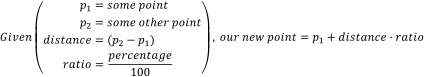So let's look at that in action: the following graphic is interactive in that you can use your up and down arrow keys to increase or decrease the interpolation ratio, to see what happens. We start with three points, which gives us two lines. Linear interpolation over those lines gives use two points, between which we can again perform linear interpolation, yielding a single point. And that point —and all points we can form in this way for all ratios taken together— form our Bézier curve:
And that brings us to the complicated maths: calculus.
While it doesn't look like that's what we've just done, we actually just drew a quadratic curve, in steps, rather than in a single go. One of the fascinating parts about Bézier curves is that they can both be described in terms of polynomial functions, as well as in terms of very simple interpolations of interpolations of [...]. That, in turn, means we can look at what these curves can do based on both "real maths" (by examining the functions, their derivatives, and all that stuff), as well as by looking at the "mechanical" composition (which tells us that a curve will never extend beyond the points we used to construct it, for instance)
So let's start looking at Bézier curves a bit more in depth. Their mathematical expressions, the properties we can derive from those, and the various things we can do to, and with, Bézier curves.
Bézier curves are a form of "parametric" function. Mathematically speaking, parametric functions are cheats: a "function" is actually a well defined term representing a mapping from any number of inputs to a single output. Numbers go in, a single number comes out. Change the numbers that go in, and the number that comes out is still a single number. Parametric functions cheat. They basically say "alright, well, we want multiple values coming out, so we'll just use more than one function". An illustration: Let's say we have a function that maps some value, let's call it x, to some other value, using some kind of number manipulation:

The notation f(x) is the standard way to show that it's a function (by convention called f if we're only listing one) and its output changes based on one variable (in this case, x). Change x, and the output for f(x) changes.
So far so good. Now, let's look at parametric functions, and how they cheat. Let's take the following two functions:
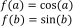There's nothing really remarkable about them, they're just a sine and cosine function, but you'll notice the inputs have different names. If we change the value for a, we're not going to change the output value for f(b), since a isn't used in that function. Parametric functions cheat by changing that. In a parametric function all the different functions share a variable, like this:
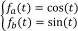Multiple functions, but only one variable. If we change the value for t, we change the outcome of both fa(t) and fb(t). You might wonder how that's useful, and the answer is actually pretty simple: if we change the labels fa(t) and fb(t) with what we usually mean with them for parametric curves, things might be a lot more obvious:
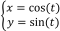There we go. x/y coordinates, linked through some mystery value t.
So, parametric curves don't define a y coordinate in terms of an x coordinate, like normal functions do, but they instead link the values to a "control" variable. If we vary the value of t, then with every change we get two values, which we can use as (x,y) coordinates in a graph. The above set of functions, for instance, generates points on a circle: We can range t from negative to positive infinity, and the resulting (x,y) coordinates will always lie on a circle with radius 1 around the origin (0,0). If we plot it for t from 0 to 5, we get this (use your up and down arrow keys to change the plot end value):
Bézier curves are (one in many classes of) parametric functions, and are characterised by using the same base function for all its dimensions. Unlike the above example, where the x and y values use different functions (one uses a sine, the other a cosine), Bézier curves use the "binomial polynomial" for both x and y. So what are binomial polynomials?
You may remember polynomials from high school, where they're those sums that look like:
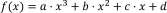If they have a highest order term x³ they're called "cubic" polynomials, if it's x² it's a "square" polynomial, if it's just x it's a line (and if there aren't even any terms with x it's not a polynomial!)
Bézier curves are polynomials of t, rather than x, with the value for t fixed being between 0 and 1, with coefficients a, b etc. taking the "binomial" form, which sounds fancy but is actually a pretty simple description for mixing values:
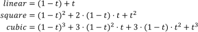I know what you're thinking: that doesn't look too simple, but if we remove t and add in "times one", things suddenly look pretty easy. Check out these binomial terms:
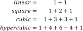Notice that 2 is the same as 1+1, and 3 is 2+1 and 1+2, and 6 is 3+3... As you can see, each time we go up a dimension, we simply start and end with 1, and everything in between is just "the two numbers above it, added together". Now that's easy to remember.
There's an equally simple way to figure out how the polynomial terms work: if we rename (1-t) to a and t to b, and remove the weights for a moment, we get this:
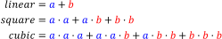It's basically just a sum of "every combination of a and b", progressively replacing a's with b's after every + sign. So that's actually pretty simple too. So now you know binomial polynomials, and just for completeness I'm going to show you the generic function for this:
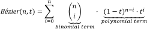And that's the full description for Bézier curves. Σ in this function indicates that this is a series of additions (using the variable listed below the Σ, starting at ...=<value> and ending at the value listed on top of the Σ).
We could naively implement the basis function as a mathematical construct, using the function as our guide, like this:
function Bezier(n,t):
sum = 0
for(k=0; k<n; k++):
sum += n!/(k!*(n-k)!) * (1-t)^(n-k) * t^(k)
return sum
I say we could, because we're not going to: the factorial function is incredibly expensive. And, as we can see from the above explanation, we can actually create Pascal's triangle quite easily without it: just start at [1], then [1,1], then [1,2,1], then [1,3,3,1], and so on, with each next row fitting 1 more number than the previous row, starting and ending with "1", with all the numbers in between being the sum of the previous row's elements on either side "above" the one we're computing.
We can generate this as a list of lists lightning fast, and then never have to compute the binomial terms because we have a lookup table:
lut = [ [1], // n=0
[1,1], // n=1
[1,2,1], // n=2
[1,3,3,1], // n=3
[1,4,6,4,1], // n=4
[1,5,10,10,5,1], // n=5
[1,6,15,20,15,6,1]] // n=6
binomial(n,k):
while(n >= lut.length):
s = lut.length
nextRow = new array(size=s+1)
nextRow[0] = 1
for(i=1, prev=s-1; i<prev; i++):
nextRow[i] = lut[prev][i-1] + lut[prev][i]
nextRow[s] = 1
lut.add(nextRow)
return lut[n][k]
So what's going on here? First, we declare a lookup table with a size that's reasonably large enough to accommodate most lookups. Then, we declare a function to get us the values we need, and we make sure that if an n/k pair is requested that isn't in the LUT yet, we expand it first. Our basis function now looks like this:
function Bezier(n,t):
sum = 0
for(k=0; k<=n; k++):
sum += binomial(n,k) * (1-t)^(n-k) * t^(k)
return sum
Perfect. Of course, we can optimize further. For most computer graphics purposes, we don't need arbitrary curves. We need quadratic and cubic curves (this primer actually does do arbitrary curves, so you'll find code similar to shown here), which means we can drastically simplify the code:
function Bezier(2,t): t2 = t * t mt = 1-t mt2 = mt * mt return mt2 + 2*mt*t + t2 function Bezier(3,t): t2 = t * t t3 = t2 * t mt = 1-t mt2 = mt * mt mt3 = mt2 * mt return mt3 + 3*mt2*t + 3*mt*t2 + t3
And now we know how to program the basis function. Exellent.
So, now we know what the base function(s) look(s) like, time to add in the magic that makes Bézier curves so special: control points.
Bézier curves are (like all "splines") interpolation functions, meaning they take a set of points, and generate values somewhere "between" those points. (One of the consequences of this is that you'll never be able to generate a point that lies outside the outline for the control points, commonly called the "hull" for the curve. Useful information!). In fact, we can visualize how each point contributes to the value generated by the function, so we can see which points are important, where, in the curve.
The following graphs show the interpolation functions for quadratic and cubic curves, with "S" being the strength of a point's contribution to the total sum of the Bézier function. Click or click-drag to see the interpolation percentages for each curve-defining point at a specific t value.
Also shown is the interpolation function for a 15th order Bézier function. As you can see, the start and end point contribute considerably more to the curve's shape than any other point in the control point set.
If we want to change the curve, we need to change the weights of each point, effectively changing the interpolations. The way to do this is about as straight forward as possible: just multiply each point with a value that changes its strength. These values are conventionally called "Weights", and we can add them to our original Bézier function:
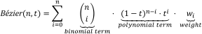That looks complicated, but as it so happens, the "weights" are actually just the coordinate values we want our curve to have: for an nth order curve, w0 is our start coordinate, wn is our last coordinate, and everything in between is a controlling coordinate. Say we want a cubic curve that starts at (120,160), is controlled by (35,200) and (220,260) and ends at (220,40), we use this Bézier curve:
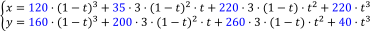Which gives us the curve we saw at the top of the article:
What else can we do with Bézier curves? Quite a lot, actually. The rest of this article covers a multitude of possible operations and algorithms that we can apply, and the tasks they achieve.
Given that we already know how to implement basis function, adding in the control points is remarkably easy:
function Bezier(n,t,w[]):
sum = 0
for(k=0; k<n; k++):
sum += w[k] * binomial(n,k) * (1-t)^(n-k) * t^(k)
return sum
And for the extremely optimized versions:
function Bezier(2,t,w[]): t2 = t * t mt = 1-t mt2 = mt * mt return w[0]*mt2 + w[1]*2*mt*t + w[2]*t2 function Bezier(3,t,w[]): t2 = t * t t3 = t2 * t mt = 1-t mt2 = mt * mt mt3 = mt2 * mt return w[0]*mt3 + 3*w[1]*mt2*t + 3*w[2]*mt*t2 + w[3]*t3
And now we know how to program the weighted basis function.
Now that we know the mathematics behind Bézier curves, there's one curious thing that you may have noticed: they always run from t=0 to t=1. Why that particular interval?
It all has to do with how we run from "the start" of our curve to "the end" of our curve. If we have a value that is a mixture of two other values, then the general formula for this is:
The obvious start and end values here need to be a=1, b=0, so that the mixed value is 100% value 1, and 0% value 2, and a=0, b=1, so that the mixed value is 0% value 1 and 100% value 2. Additionally, we don't want "a" and "b" to be independent: if they are, then we could just pick whatever values we like, and end up with a mixed value that is, for example, 100% value 1 and 100% value 2. In principle that's fine, but for Bézier curves we always want mixed values between the start and end point, so we need to make sure we can never set "a" and "b" to some values that lead to a mix value that sums to more than 100%. And that's easy:
With this we can guarantee that we never sum above 100%. By restricting a to values in the interval [0,1], we will always be somewhere between our two values (inclusively), and we will always sum to a 100% mix.
But... what if we use this form, used in the assumption that we will only ever use values between 0 and 1, and instead use values outside of that interval? Do things go horribly wrong? Well... not really, but we get to "see more".
In the case of Bézier curves, extending the interval simply makes our curve "keep going". Bézier curves are simply segments on some polynomial curve, so if we pick a wider interval we simply get to see more of the curve. So what do they look like?
The following two graphics show you Bézier curves rendered "the usual way", as well as the curves they "lie on" if we were to extend the t values much further. As you can see, there's a lot more "shape" hidden in the rest of the curve, and we can model those parts by moving the curve points around.
In fact, there are curves used in graphics design and computer modelling that do the opposite of Bézier curves, where rather than fixing the interval, and giving you free coordinates, they fix the coordinates, but give you freedom over the interval. A great example of this is the "Spiro" curve, which is a curve based on part of a Cornu Spiral, also known as Euler's Spiral. It's a very aesthetically pleasing curve and you'll find it in quite a few graphics packages like FontForge and Inkscape, having even been used in font design (such as for the Inconsolata font).
We can also represent Bézier as matrix operations, by expressing the Bézier formula as a polynomial basis function, the weight matrix, and the actual coordinates as matrix. Let's look at what this means for the cubic curve:
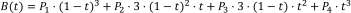Disregarding our actual coordinates for a moment, we have:
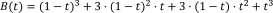We can write this as a sum of four expressions:
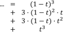And we can expand these expressions:
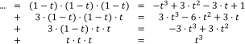Furthermore, we can make all the 1 and 0 factors explicit:
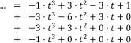And that, we can view as a series of four matrix operations:
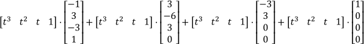If we compact this into a single matrix operation, we get:
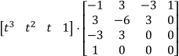This kind of polynomial basis representation is generally written with the bases in increasing order, which means we need to flip our t matrix horizontally, and our big "mixing" matrix upside down:
And then finally, we can add in our original coordinates as a single third matrix:
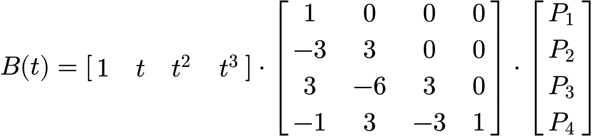We can perform the same trick for the quadratic curve, in which case we end up with:
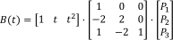If we plug in a t value, and then multiply the matrices, we will get exactly the same values as when we evaluate the original polynomial function, or as when we evaluate the curve using progessive linear interpolation.
So: why would we bother with matrices? Matrix representations allow us to discover things about functions that would otherwise be hard to tell. It turns out that the curves form triangular matrices, and they have a determinant equal to the product of the actual coordinates we use for our curve. It's also invertible, which means there's a ton of properties that are all satisfied. Of course, the main question is: "Why is this useful to us, now?", and the answer to that is that it's not immediately useful, but you'll be seeing some instances where certain curve properties can be either computed via function manipulation, or via clever use of matrices, and sometimes the matrix approach can be (drastically) faster.
So for now, just remember that we can represent curves this way, and let's move on.
If we want to draw Bézier curves we can run through all values of t from 0 to 1 and then compute the weighted basis function, getting the x/y values we need to plot, but the more complex the curve gets, the more expensive this becomes. Instead, we can use "de Casteljau's algorithm" to draw curves, which is a geometric approach to drawing curves, and really easy to implement. So easy, in fact, you can do it by hand with a pencil and ruler.
Rather than using our calculus function to find x/y values for t, let's do this instead:
t as a ratio (which it is). t=0 is 0% along a line, t=1 is 100% along a line.n curve, that's n lines.t. So if t is 0.2, place the mark at 20% from the start, 80% from the end.those points. This gives n-1 lines.t.those points. This'll be n-2 lines.t on that line coincides with the original curve point at t.Let's just use the algorithm we just specified, and implement that:
function drawCurve(points[], t):
if(points.length==1):
draw(points[0])
else:
newpoints=array(points.size-1)
for(i=0; i<newpoints.length; i++):
newpoints[i] = (1-t) * points[i] + t * points[i+1]
drawCurve(newpoints, t)
And done, that's the algorithm implemented. Except usually you don't get the luxury of overloading the "+" operator, so let's also give the code for when you need to work with x and y values:
function drawCurve(points[], t):
if(points.length==1):
draw(points[0])
else:
newpoints=array(points.size-1)
for(i=0; i<newpoints.length; i++):
x = (1-t) * points[i].x + t * points[i+1].x
y = (1-t) * points[i].y + t * points[i+1].y
newpoints[i] = new point(x,y)
drawCurve(newpoints, t)
So what does this do? This draws a point, if the passed list of points is only 1 point long. Otherwise it will create a new list of points that sit at the t ratios (i.e. the "markers" outlined in the above algorithm), and then call the draw function for this new list.
To see this in action, mouse-over the following sketch. Moving the mouse changes which curve point is explicitly evaluated using de Casteljau's algorithm, moving the cursor left-to-right (or, of course, right-to-left), shows you how a curve is generated using this approach.
We can also simplify the drawing process by "sampling" the curve at certain points, and then joining those points up with straight lines, a process known as "flattening", as we are reducing a curve to a simple sequence of straight, "flat" lines.
We can do this is by saying "we want X segments", and then sampling the curve at intervals that are spaced such that we end up with the number of segments we wanted. The advantage of this method is that it's fast: instead of evaluating 100 or even 1000 curve coordinates, we can sample a much lower number and still end up with a curve that sort-of-kind-of looks good enough. The disadvantage of course is that we lose the precision of working with "the real curve", so we usually can't use the flattened for for doing true intersection detection, or curvature alignment.
Try clicking on the sketch and using your up and down arrow keys to lower the number of segments for both the quadratic and cubic curve. You'll notice that for certain curvatures, a low number of segments works quite well, but for more complex curvatures (try this for the cubic curve), a higher number is required to capture the curvature changes properly.
Let's just use the algorithm we just specified, and implement that:
function flattenCurve(curve, segmentCount):
step = 1/segmentCount;
coordinates = [curve.getXValue(0), curve.getYValue(0)]
for(i=1; i <= segmentCount; i++):
t = i*step;
coordinates.push[curve.getXValue(t), curve.getYValue(t)]
return coordinates;
And done, that's the algorithm implemented. That just leaves drawing the resulting "curve" as a sequence of lines:
function drawFlattenedCurve(curve, segmentCount):
coordinates = flattenCurve(curve, segmentCount)
coord = coordinates[0], _coords;
for(i=1; i < coordinates.length; i++):
_coords = coordinates[i]
line(coords, _coords)
coords = _coords
We start with the first coordinate as reference point, and then just draw lines between each point and its next point.
With de Casteljau's algorithm we also find all the points we need to split up a Bézier curve into two, smaller curves, which taken together form the original curve. When we construct de Casteljau's skeleton for some value t, the procedure gives us all the points we need to split a curve at that t value: one curve is defined by all the inside skeleton points found prior to our on-curve point, with the other curve being defined by all the inside skeleton points after our on-curve point.
We can implement curve splitting by bolting some extra logging onto the de Casteljau function:
left=[]
right=[]
function drawCurve(points[], t):
if(points.length==1):
left.add(points[0])
right.add(points[0])
draw(points[0])
else:
newpoints=array(points.size-1)
for(i=0; i<newpoints.length; i++):
if(i==0):
left.add(points[i])
if(i==newpoints.length-1):
right.add(points[i+1])
newpoints[i] = (1-t) * points[i] + t * points[i+1]
drawCurve(newpoints, t)
After running this function for some value t, the left and right arrays will contain all the coordinates for two new curves - one to the "left" of our t value, the other on the "right", of the same order as the original curve, and overlayed exactly on the original curve.
This is best illustrated with an animated graphic (click to play/pause):
Another way to split curves is to exploit the matrix representation of a Bézier curve. In the section on matrices we saw that we can represent curves as matrix multiplications. Specifically, we saw these two forms for the quadratic, and cubic curves, respectively (using the reversed Bézier coefficients vector for legibility):
and
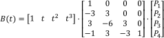Let's say we want to split the curve at some point t = z, forming two new (obviously smaller) Bézier curves. To find the coordinates for these two Bézier curves, we can use the matrix representation and some linear algebra. First, we split out the the actual "point on the curve" information as a new matrix multiplication:
and
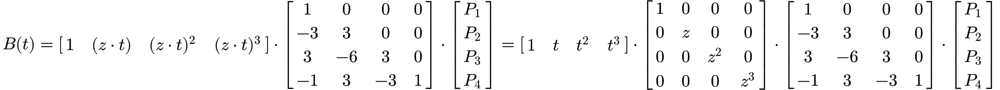If we could compact these matrices back to a form [t values] · [bezier matrix] · [column matrix], with the first two staying the same, then that column matrix on the right would be the coordinates of a new Bézier curve that describes the first segment, from t = 0 to t = z. As it turns out, we can do this quite easily, by exploiting some simple rules of linear algebra (and if you don't care about the derivations, just skip to the end of the box for the results!).
Deriving the two segments upon splitting a curve takes a few steps, and the higher the curve order, the more work it is, so let's look at the quadratic curve first:
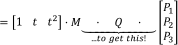We do this, because [M · M-1] is the identity matrix (a bit like multiplying something by x/x in calculus. It doesn't do anything to the function, but it does allow you to rewrite it to something that may be easier to work with, or can be broken up differently). Adding that as matrix multiplication has no effect on the total formula, but it does allow us to change the matrix sequence [something · M] to a sequence [M · something], and that makes a world of difference: if we know what [M-1 · Z · M] is, we can apply that to our coordinates, and be left with a proper matrix representation of a quadratic Bézier curve (which is [T · M · P]), with a new set of coordinates that represent the curve from t = 0 to t = z. So let's get computing:
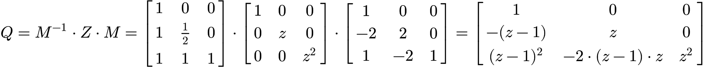Excellent! Now we can form our new quadratic curve:
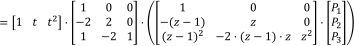Brilliant: if we want a subcurve from t = 0 to t = z, we can keep the first coordinate the same (which makes sense), our control point becomes a z-ratio mixture of the original control point and the start point, and the new end point is a mixture that looks oddly similar to a bernstein polynomial of degree two, except it uses (z-1) rather than (1-z)... These new coordinates are actually really easy to compute directly!
Of course, that's only one of the two curves. Getting the section from t = z to t = 1 requires doing this again. We first observe what what we just did is actually evaluate the general interval [0,z], which we wrote down simplified becuase of that zero, but we actually evaluated this:

If we want the interval [z,1], we will be evaluating this instead:
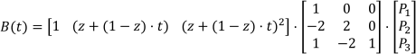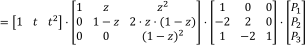We're going to do the same trick, to turn [something · M] into [M · something]:
So, our final second curve looks like:
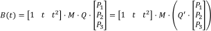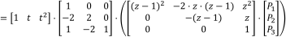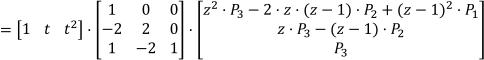Nice: we see the same as before; can keep the last coordinate the same (which makes sense), our control point becomes a z-ratio mixture of the original control point and the end point, and the new start point is a mixture that looks oddly similar to a bernstein polynomial of degree two, except it uses (z-1) rather than (1-z). These new coordinates are also really easy to compute directly!
So, using linear algebra rather than de Casteljau's algorithm, we have determined that for any quadratic curve split at some value t = z, we get two subcurves that are described as Bézier curves with simple-to-derive coordinates.

and
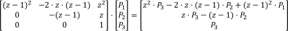We can do the same for cubic curves. However, I'll spare you the actual derivation (don't let that stop you from writing that out yourself, though) and simply show you the resulting new coordinate sets:

and
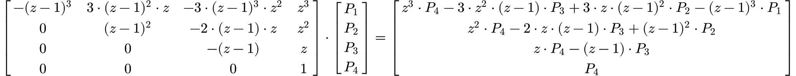So, looking at our matrices, did we really need to compute the second segment matrix? No, we didn't. Actually having one segment's matrix means we implicitly have the other: push the values of each row in the matrix Q to the right, with zeroes getting pushed off the right edge and appearing back on the left, and then flip the matrix vertically. Presto, you just "calculated" Q'.
Implementing curve splitting this way requires less recursion, and is just straight arithmetic with cached values, so can be cheaper on systems were recursion is expensive. If you're doing computation with devices that are good at matrix multiplication, chopping up a Bézier curve with this method will be a lot faster than applying de Casteljau.
One interesting property of Bézier curves is that an nth order curve can always be perfectly represented by an (n+1)th order curve, by giving the higher order curve specific control points.
If we have a curve with three points, then we can create a four point curve that exactly reproduce the original curve as long as we give it the same start and end points, and for its two control points we pick "1/3rd start + 2/3rd control" and "2/3rd control + 1/3rd end", and now we have exactly the same curve as before, except represented as a cubic curve, rather than a quadratic curve.
The general rule for raising an nth order curve to an (n+1)th order curve is as follows (observing that the start and end weights are the same as the start and end weights for the old curve):
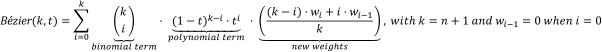However, this rule also has as direct consequence that you cannot generally safely lower a curve from nth order to (n-1)th order, because the control points cannot be "pulled apart" cleanly. We can try to, but the resulting curve will not be identical to the original, and may in fact look completely different.
We can apply this to a (semi) random curve, as is done in the following graphic. Select the sketch and press your up and down arrow keys to elevate or lower the curve order.
There is a good, if mathematical, explanation on the matrices necessary for optimal reduction over on Sirver's Castle, which given time will find its way in a more direct description into this article.
There's a number of useful things that you can do with Bézier curves based on their derivative, and one of the more amusing observations about Bézier curves is that their derivatives are, in fact, also Bézier curves. In fact, the derivation of a Bézier curve is relatively straight forward, although we do need a bit of math. First, let's look at the derivative rule for Bézier curves, which is:
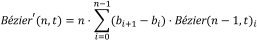which we can also write (observing that b in this formula is the same as our w weights, and that n times a summation is the same as a summation where each term is multiplied by n) as:
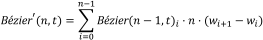Or, in plain text: the derivative of an nth degree Bézier curve is an (n-1)th degree Bézier curve, with one fewer term, and new weights w'0...w'n-1 derived from the original weights as n(wi+1 - wi), so for a 3rd degree curve, with four weights, the derivative has three new weights w'0 = 3(w1-w0), w'1 = 3(w2-w1) and w'2 = 3(w3-w2).
Sometimes just being told "this is the derivative" is nice, but you might want to see why this is indeed the case. As such, let's have a look at the proof for this derivative. First off, the weights are independent of the full Bézier function, so the derivative involves only the derivative of the polynomial basis function. So, let's find that:
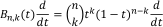Applying the product and chain rules gives us:
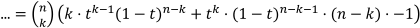Which is hard to work with, so let's expand that properly:
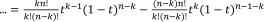Now, the trick is to turn this expression into something that has binomial coefficients again, so we want to end up with things that look like "x! over y!(x-y)!". If we can do that in a way that involves terms of n-1 and k-1, we'll be on the right track.
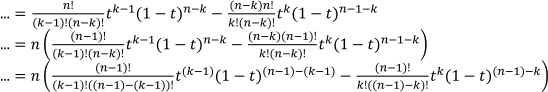And that's the first part done: the two components inside the parentheses are actually regular, lower order Bezier expressions:
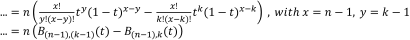Now to apply this to our weighted Bezier curves. We'll write out the plain curve formula that we saw earlier, and then work our way through to its derivative:
If we expand this (with some color to show how terms line up), and reorder the terms by increasing values for k we see the following:
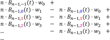Two of these terms fall way: the first term falls away because there is no -1st term in a summation. As such, it always contributes "nothing", so we can safely completely ignore it for the purpose of finding the derivative function. The other term is the very last term in this expansion: one involving Bn-1,n. This term would have a binomial coefficient of [i choose i+1], which is a non-existent binomial coefficient. Again, this term would contribute "nothing", so we can ignore it, too. This means we're left with:

And that's just a summation of lower order curves:
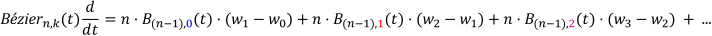We can rewrite this as a normal summation, and we're done:
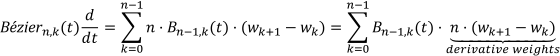Let's rewrite that in a form similar to our original formula, so we can see the difference. We will first list our original formula for Bézier curves, and then the derivative:
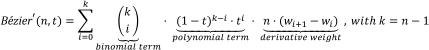What are the differences? In terms of the actual Bézier curve, virtually nothing! We lowered the order (rather than n, it's now n-1), but it's still the same Bézier function. The only real difference is in how the weights change when we derive the curve's function. If we have four points A, B, C, and D, then the derivative will have three points, the second derivative two, and the third derivative one:
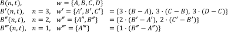We can keep performing this trick for as long as we have more than one weight. Once we have one weight left, the next step will see k = 0, and the result of our "Bézier function" summation is zero, because we're not adding anything at all. As such, a quadratic curve has no second derivative, a cubic curve has no third derivative, and generalized: an nth order curve has n-1 (meaningful) derivatives, with any further derivative being zero.
If you want to move objects along a curve, or "away from" a curve, the two vectors you're most interested in are the tangent vector and normal vector for curve points. These are actually really easy to find. For moving, and orienting, along a curve we use the tangent, which indicates the direction travel at specific points, and is literally just the first derivative of our curve:
This gives us the directional vector we want. We can normalize it to give us uniform directional vectors (having a length of 1.0) at each point, and then do whatever it is we want to do based on those directions:
The tangent is very useful for moving along a line, but what if we want to move away from the curve instead, perpendicular to the curve at some point t? In that case we want the "normal" vector. This vector runs at a right angle to the direction of the curve, and is typically of length 1.0, so all we have to do is rotate the normalized directional vector and we're done:
Rotating coordinates is actually very easy, if you know the rule for it. You might find it explained as "applying a rotation matrix, which is what we'll look at here, too. Essentially, the idea is to take the circles over which we can rotate, and simply "sliding the coordinates" over these circles by the desired angle. If we want a quarter circle turn, we take the coordinate, slide it along the cirle by a quarter turn, and done.
To turn any point (x,y) into a rotated point (x',y') (over 0,0) by some angle φ, we apply this nicely easy computation:
Which is the "long" version of the following matrix transformation:
And that's all we need to rotate any coordinate. Note that for quarter, half and three quarter turns these functions become even easier, since sin and cos for these angles are, respectively: 0 and 1, -1 and 0, and 0 and -1.
But why does this work? Why this matrix multiplication? Wikipedia (Technically, Thomas Herter and Klaus Lott) tells us that a rotation matrix can be treated as a sequence of three (elementary) shear operations. When we combine this into a single matrix operation (because all matrix multiplications can be collapsed), we get the matrix that you see above. DataGenetics have an excellent article about this very thing: it's really quite cool, and I strongly recommend taking a quick break from this primer to read that article.
The following two graphics show the tangent and normal along a quadratic and cubic curve, with the direction vector coloured blue, and the normal vector coloured red (the markers are spaced out evenly as t-intervals, not spaced equidistant).
One of the first things people run into when they start using Bézier curves in their own programs is "I know how to draw the curve, but how do I determine the bounding box?". It's actually reasonably straight forward to do so, but it requires having some knowledge on exploiting math to get the values we need. For bounding boxes, we aren't actually interested in the curve itself, but only in its "extremities": the minimum and maximum values the curve has for its x- and y-axis values. If you remember your calculus (provided you ever took calculus, otherwise it's going to be hard to remember) we can determine function extremities using the first derivative of that function, but this poses a problem, since our function is parametric: every axis has its own function.
The solution: compute the derivative for each axis separately, and then fit them back together in the same way we do for the original.
Let's look at how a parametric Bézier curve "splits up" into two normal functions, one for the x-axis and one for the y-axis. Note the left-most figure is again an interactive curve, without labeled axes (you get coordinates in the graph instead). The center and right-most figures are the component functions for computing the x-axis value, given a value for t (between 0 and 1 inclusive), and the y-axis value, respectively.
If you move points in a curve sideways, you should only see the middle graph change; likely, moving points vertically should only show a change in the right graph.
Now that we understand (well, superficially anyway) the component functions, we can find the extremities of our Bézier curve by finding maxima and minima on the component functions, by solving the equations B'(t) = 0 and B''(t) = 0. Although, in the case of quadratic curves there is no B''(t), so we only need to compute B'(t) = 0. So, how do we compute the first and second derivatives? Fairly easily, actually, until our derivatives are 4th order or higher... then things get really hard. But let's start simple:
Finding the solution for "where is this line 0" should be trivial:
Done. And quadratic curves have no meaningful second derivative, so we're really done.
The derivative of a cubic curve is a quadratic curve, and finding the roots for a quadratic Bézier curve means we can apply the Quadratic formula. If you've seen it before, you'll remember it, and if you haven't, it looks like this:
So, if we can express a Bézier component function as a plain polynomial, we're done: we just plug in the values into the quadratic formula, check if that square root is negative or not (if it is, there are no roots) and then just compute the two values that come out (because of that plus/minus sign we get two). Any value between 0 and 1 is a root that matters for Bézier curves, anything below or above that is irrelevant (because Bézier curves are only defined over the interval [0,1]). So, how do we convert?
First we turn our cubic Bézier function into a quadratic one, by following the rule mentioned at the end of the derivatives section:
And then, using these v values, we can find out what our a, b, and c should be:
This gives us thee coefficients a, b, and c that are expressed in terms of v values, where the v values are just convenient expressions of our original p values, so we can do some trivial substitution to get:
Easy peasy. We can now almost trivially find the roots by plugging those values into the quadratic formula. We also note that the second derivative of a cubic curve means computing the first derivative of a quadratic curve, and we just saw how to do that in the section above.
Quartic—fourth degree—curves have a cubic function as derivative. Now, cubic functions are a bit of a problem because they're really hard to solve. But, way back in the 16th century, Gerolamo Cardano figured out that even if the general cubic function is really hard to solve, it can be rewritten to a form for which finding the roots is "easy", and then the only hard part is figuring out how to go from that form to the generic form. So:
This is easier because for the "easier formula" we can use regular calculus to find the roots (as a cubic function, however, it can have up to three roots, but two of those can be complex. For the purpose of Bézier curve extremities, we can completely ignore those complex roots, since our t is a plain real number from 0 to 1).
So, the trick is to figure out how to turn the first formula into the second formula, and to then work out the maths that gives us the roots. This is explained in detail over at Ken J. Ward's page for solving the cubic equation, so instead of showing the maths, I'm simply going to show the programming code for solving the cubic equation, with the complex roots getting totally ignored.
The "real roots" part is fairly important, because while you cannot take a square, cube, etc. root of a negative number in the "real" number space (denoted with ℝ), this is perfectly fine in the "complex" number space (denoted with ℂ). And, as it so happens, Cardano is also attributed as the first mathematician in history to have made use of complex numbers in his calculations. For this very algorithm!
// A helper function to filter for values in the [0,1] interval:
function accept(t) {
return 0<=t && t <=1;
}
// A real-cuberoots-only function:
function crt(v) {
if(v<0) return -Math.pow(-v,1/3);
return Math.pow(v,1/3);
}
// Now then: given cubic coordinates {pa, pb, pc, pd} find all roots.
function getCubicRoots(pa, pb, pc, pd) {
var d = (-pa + 3*pb - 3*pc + pd),
a = (3*pa - 6*pb + 3*pc) / d,
b = (-3*pa + 3*pb) / d,
c = pa / d;
var p = (3*b - a*a)/3,
p3 = p/3,
q = (2*a*a*a - 9*a*b + 27*c)/27,
q2 = q/2,
discriminant = q2*q2 + p3*p3*p3;
// and some variables we're going to use later on:
var u1,v1,root1,root2,root3;
// three possible real roots:
if (discriminant < 0) {
var mp3 = -p/3,
mp33 = mp3*mp3*mp3,
r = sqrt( mp33 ),
t = -q / (2*r),
cosphi = t<-1 ? -1 : t>1 ? 1 : t,
phi = acos(cosphi),
crtr = cuberoot(r),
t1 = 2*crtr;
root1 = t1 * cos(phi/3) - a/3;
root2 = t1 * cos((phi+2*pi)/3) - a/3;
root3 = t1 * cos((phi+4*pi)/3) - a/3;
return [root1, root2, root3].filter(accept);
}
// three real roots, but two of them are equal:
if(discriminant === 0) {
u1 = q2 < 0 ? cuberoot(-q2) : -cuberoot(q2);
root1 = 2*u1 - a/3;
root2 = -u1 - a/3;
return [root1, root2].filter(accept);
}
// one real root, two complex roots
var sd = sqrt(discriminant);
u1 = cuberoot(sd - q2);
v1 = cuberoot(sd + q2);
root1 = u1 - v1 - a/3;
return [root1].filter(accept);
}
And that's it. The maths is complicated, but the code is pretty much just "follow the maths, while caching as many values as we can to reduce recomputing things as much as possible" and now we have a way to find all roots for a cubic function and can just move on with using that to find extremities of our curves.
The problem with this is that as the order of the curve goes up, we can't actually solve those equations the normal way. We can't take the function, and then work out what the solutions are. Not to mention that even solving a third order derivative (for a fourth order curve) is already a royal pain in the backside. We need a better solution. We need numerical approaches.
That's a fancy word for saying "rather than solve the function, treat the problem as a sequence of identical operations, the performing of which gets us closer and closer to the real answer". As it turns out, there is a really nice numerical root finding algorithm, called the Newton-Raphson root finding method (yes, after that Newton), which we can make use of.
The Newton-Raphson approach consists of picking a value t (any will do), and getting the corresponding value at that t value. For normal functions, we can treat that value as a height. If the height is zero, we're done, we have found a root. If it's not, we take the tangent of the curve at that point, and extend it until it passes the x-axis, which will be at some new point t. We then repeat the procedure with this new value, and we keep doing this until we find our root.
Mathematically, this means that for some t, at step n=1, we perform the following calculation until fy(t) is zero, so that the next t is the same as the one we already have:
(The wikipedia article has a decent animation for this process, so I'm not adding a sketch for that here unless there are requests for it)
Now, this works well only if we can pick good starting points, and our curve is continuously differentiable and doesn't have oscillations. Glossing over the exact meaning of those terms, the curves we're dealing with conform to those constraints, so as long as we pick good starting points, this will work. So the question is: which starting points do we pick?
As it turns out, Newton-Raphson is so blindingly fast, so we could get away with just not picking: we simply run the algorithm from t=0 to t=1 at small steps (say, 1/200th) and the result will be all the roots we want. Of course, this may pose problems for high order Bézier curves: 200 steps for a 200th order Bézier curve is going to go wrong, but that's okay: there is no reason, ever, to use Bézier curves of crazy high orders. You might use a fifth order curve to get the "nicest still remotely workable" approximation of a full circle with a single Bézier curve, that's pretty much as high as you'll ever need to go.
So now that we know how to do root finding, we can determine the first and second derivative roots for our Bézier curves, and show those roots overlaid on the previous graphics:
If we have the extremities, and the start/end points, a simple for loop that tests for min/max values for x and y means we have the four values we need to box in our curve:
Computing the bounding box for a Bézier curve:
Applying this approach to our previous root finding, we get the following bounding boxes (with all curve extremity points shown on the curve):
We can construct even nicer boxes by aligning them along our curve, rather than along the x- and y-axis, but in order to do so we first need to look at how aligning works.
While there are an incredible number of curves we can define by varying the x- and y-coordinates for the control points, not all curves are actually distinct. For instance, if we define a curve, and then rotate it 90 degrees, it's still the same curve, and we'll find its extremities in the same spots, just at different draw coordinates. As such, one way to make sure we're working with a "unique" curve is to "axis-align" it.
Aligning also simplifies a curve's functions. We can translate (move) the curve so that the first point lies on (0,0), which turns our n term polynomial functions into n-1 term functions. The order stays the same, but we have less terms. Then, we can rotate the curves so that the last point always lies on the x-axis, too, making its coordinate (...,0). This further simplifies the function for the y-component to an n-2 term function. For instance, if we have a cubic curve such as this:
Then translating it so that the first coordinate lies on (0,0), moving all x coordinates by -120, and all y coordinates by -160, gives us:
If we then rotate the curve so that its end point lies on the x-axis, the coordinates (integer-rounded for illustrative purposes here) become:
If we drop all the zero-terms, this gives us:
We can see that our original curve definition has been simplified considerably. The following graphics illustrate the result of aligning our example curves to the x-axis, with the cubic case using the coordinates that were just used in the example formulae:
With our knowledge of bounding boxes, and curve alignment, We can now form the "tight" bounding box for curves. We first align our curve, recording the translation we performed, "T", and the rotation angle we used, "R". We then determine the aligned curve's normal bounding box. Once we have that, we can map that bounding box back to our original curve by rotating it by -R, and then translating it by -T. We now have nice tight bounding boxes for our curves:
These are, strictly speaking, not necessarily the tightest possible bounding boxes. It is possible to compute the optimal bounding box by determining which spanning lines we need to effect a minimal box area, but because of the parametric nature of Bézier curves this is actually a rather costly operation, and the gain in bounding precision is often not worth it. If there is high demand for it, I'll add a section on how to precisely compute the best fit bounding box, but the maths is fairly gruelling and just not really worth spending time on.
Now that we know how to align a curve, there's one more thing we can calculate: inflection points. Imagine we have a variable size circle that we can slide up against our curve. We place it against the curve and adjust its radius so that where it touches the curve, the curvatures of the curve and the circle are the same, and then we start to slide the circle along the curve - for quadratic curves, we can always do this without the circle behaving oddly: we might have to change the radius of the circle as we slide it along, but it'll always sit against the same side of the curve.
But what happens with cubic curves? Imagine we have an S curve and we place our circle at the start of the curve, and start sliding it along. For a while we can simply adjust the radius and things will be fine, but once we get to the midpoint of that S, something odd happens: the circle "flips" from one side of the curve to the other side, in order for the curvatures to keep matching. This is called an inflection, and we can find out where those happen relatively easily.
What we need to do is solve a simple equation:
What we're saying here is that given the curvature function C(t), we want to know for which values of t this function is zero, meaning there is no "curvature", which will be exactly at the point between our circle being on one side of the curve, and our circle being on the other side of the curve. So what does C(t) look like? Actually something that seems not too hard:
So the function C(t) is wholly defined by the first and second derivative functions for the parametric dimensions of our curve. And as already shown, derivatives of Bézier curves are just simpler Bézier curves, with very easy to compute new coefficients, so this should be pretty easy.
However as we've seen in the section on aligning, aligning lets us simplify things a lot, by completely removing the contributions of the first coordinate from most mathematical evaluations, and removing the last y coordinate as well by virtue of the last point lying on the x-axis. So, while we can evaluate C(t) = 0 for our curve, it'll be much easier to first axis-align the curve and then evalutating the curvature function.
Of course, before we do our aligned check, let's see what happens if we compute the curvature function without axis-aligning. We start with the first and second derivatives, given our basis functions:
And of course the same functions for y:
Asking a computer to now compose the C(t) function for us (and to expand it to a readable form of simple terms) gives us this rather overly complicated set of arithmetic expressions:
That is... unwieldy. So, we note that there are a lot of terms that involve multiplications involving x1, y1, and y4, which would all disappear if we axis-align our curve, which is why aligning is a great idea.
Aligning our curve so that three of the eight coefficients become zero, we end up with the following simple term function for C(t):
That's a lot easier to work with: we see a fair number of terms that we can compute and then cache, giving us the following simplification:
This is a plain quadratic curve, and we know how to solve C(t) = 0; we use the quadratic formula:
We can easily compute this value if the descriminator isn't a negative number (because we only want real roots, not complex roots), and if x is not zero, because divisions by zero are rather useless.
Taking that into account, we compute t, we disregard any t value that isn't in the Bézier interval [0,1], and we now know at which t value(s) our curve will inflect.
While quadratic curves are relatively simple curves to analyze, the same cannot be said of the cubic curve. As a curvature controlled by more than one control points, it exhibits all kinds of features like loops, cusps, odd colinear features, and up to two inflection points because the curvature can change direction up to three times. Now, knowing what kind of curve we're dealing with means that some algorithms can be run more efficiently than if we have to implement them as generic solvers, so is there a way to determine the curve type without lots of work?
As it so happens, the answer is yes and the solution we're going to look at was presented by Maureen C. Stone from Xerox PARC and Tony D. deRose from the University of Washington in their joint paper "A Geometric Characterization of Parametric Cubic curves". It was published in 1989, and defines curves as having a "canonical" form (i.e. a form that all curves can be reduced to) from which we can immediately tell which features a curve will have. So how does it work?
The first observation that makes things work is that if we have a cubic curve with four points, we can apply a linear transformation to these points such that three of the points end up on (0,0), (0,1) and (1,1), with the last point then being "somewhere". After applying that transformation, the location of that last point can then tell us what kind of curve we're dealing with. Specifically, we see the following breakdown:
This is a fairly funky image, so let's see how it breaks down. We see the three fixed points at (0,0), (0,1) and (1,1), and then the fourth point is somewhere. Depending on where it is, our curve will have certain features. Namely, if the fourth point is...
Of course, this map is fairly small, but the regions extend to infinity, with well defined boundaries.
Without repeating the paper mentioned at the top of this section, the loop-boundaries come from rewriting the curve into canonical form, and then solving the formulae for which constraints must hold for which possible curve properties. In the paper these functions yield formulae for where you will find cusp points, or loops where we know t=0 or t=1, but those functions are derived for the full cubic expression, meaning they apply to t=-∞ to t=∞... For Bézier curves we only care about the "clipped interval" t=0 to t=1, so some of the properties that apply when you look at the curve over an infinite interval simply don't apply to the Bézier curve interval.
The right bound for the loop region, indicating where the curve switches from "having inflections" to "having a loop", for the general cubic curve, is actually mirrored over x=1, but for Bézier curves this right half doesn't apply, so we don't need to pay attention to it. Similarly, the boundaries for t=0 and t=1 loops are also nice clean curves but get "cut off" when we only look at what the general curve does over the interval t=0 to t=1.
For the full details, head over to the paper and read through sections 3 and 4. If you still remember your high school precalculus, you can probably follow along with this paper, although you might have to read it a few times before all the bits "click".
So now the question becomes: how do we manipulate our curve so that it fits this canonical form, with three fixed points, and one "free" point? Enter linear algerba. Don't worry, I'll be doing all the math for you, as well as show you what the effect is on our curves, but basically we're going to be using linear algebra, rather than calculus, because "it's way easier". Sometimes a calculus approach is very hard to work with, when the equivalent geometrical solution is super obvious.
The approach is going to start with a curve that doesn't have all-colinear points (so we need to make sure the points don't all fall on a straight line), and then applying four graphics operations that you will probably have heard of: translation (moving all points by some fixed x- and y-distance), scaling (multiplying all points by some x and y scale factor), and shearing (an operation that turns rectangles into parallelograms).
Step 1: we translate any curve by -p1.x and -p1.y, so that the curve starts at (0,0). We're going to make use of an interesting trick here, by pretending our 2D coordinates are 3D, with the z coordinate simply always being 1. This is an old trick in graphics to overcome the limitations of 2D transformations: without it, we can only turn (x,y) coordinates into new coordinates of the form (ax + by, cx + dy), which means we can't do translation, since that requires we end up with some kind of (x + a, y + b). If we add a bogus z coordinate that is always 1, then we can suddenly add arbitrary values. For example:
Sweet! z stays 1, so we can effectively ignore it entirely, but we added some plain values to our x and y coordinates. So, if we want to subtract p1.x and p1.y, we use:
Running all our coordinates through this transformation gives a new set of coordinates, let's call those U, where the first coordinate lies on (0,0), and the rest is still somewhat free. Our next job is to make sure point 2 ends up lying on the x=0 line, so what we want is a transformation matrix that, when we run it, subtracts x from whatever x we currently have. This is called shearing, and the typical x-shear matrix and its transformation looks like this:
So we want some shearing value that, when multiplied by y, yields -x, so our x coordinate becomes zero. That value is simpy -x/y, because -x/y * y = -x. Done:
Now, running this on all our points generates a new set of coordinates, let's call those V, which now have point 1 on (0,0) and point 2 on (0, some-value), and we wanted it at (0,1), so we need to do some scaling to make sure it ends up at (0,1). Additionally, we want point 3 to end up on (1,1), so we can also scale x to make sure its x-coordinate will be 1 after we run the transform. That means we'll be x-scaling by 1/point3x, and y-scaling by point2y. This is really easy:
Then, finally, this generates a new set of coordinates, let's call those W, of which point 1 lies on (0,0), point 2 lies on (0,1), and point three lies on (1, ...) so all that's left is to make sure point 3 ends up at (1,1) - but we can't scale! Point 2 is already in the right place, and y-scaling would move it out of (0,1) again, so our only option is to y-shear point three, just like how we x-sheared point 2 earlier. In this case, we do the same trick, but with y/x rather than x/y because we're not x-shearing but y-shearing. Additionally, we don't actually want to end up at zero (which is what we did before) so we need to shear towards an offset, in this case 1:
And this generates our final set of four coordinates. Of these, we already know that points 1 through 3 are (0,0), (0,1) and (1,1), and only the last coordinate is "free". In fact, given any four starting coordinates, the resulting "transformation mapped" coordinate will be:
That looks very complex, but notice that every coordinate value is being offset by the initial translation, and a lot of terms in there repeat: it's pretty easy to calculate this fast, since there's so much we can cache and reuse while we compute this mapped coordinate!
First, let's just do that translation step as a "preprocessing" operation so we don't have to subtract the values all the time. What does that leave?
Suddenly things look a lot simpler: the mapped x is fairly straight forward to compute, and we see that the mapped y actually contains the mapped x in its entirety, so we'll have that part already available when we need to evaluate it. In fact, let's pull out all those common factors to see just how simple this is:
That's kind of super-simple to write out in code, I think you'll agree. Coding math tends to be easier than the formulae initially make it look!
Doing maths can be a pain, so whenever possible, I like to make computers do the work for me. Especially for things like this, I simply use Mathematica. Tracking all this math by hand is insane, and we invented computers, literally, to do this for us. I have no reason to use pen and paper when I can write out what I want to do in a program, and have the program do the math for me. And real math, too, with symbols, not with numbers. In fact, here's the Mathematica notebook if you want to see how this works for yourself.
Now, I know, you're thinking "but Mathematica is super expensive!" and that's true, it's $295 for home use, but it's also free when you buy a $35 raspberry pi. Obviously, I bought a raspberry pi, and I encourage you to do the same. With that, as long as you know what you want to do, Mathematica can just do it for you. And we don't have to be geniusses to work out what the maths looks like. That's what we have computers for.
So, let's write up a sketch that'll show us the canonical form for any curve drawn in blue, overlaid on our canonical map, so that we can immediately tell which features our curve must have, based on where the fourth coordinate is located on the map:
How long is a Bézier curve? As it turns out, that's not actually an easy question, because the answer requires maths that —much like root finding— cannot generally be solved the traditional way. If we have a parametric curve with fx(t) and fy(t), then the length of the curve, measured from start point to some point t = z, is computed using the following seemingly straight forward (if a bit overwhelming) formula:
or, more commonly written using Leibnitz notation as:
This formula says that the length of a parametric curve is in fact equal to the area underneath a function that looks a remarkable amount like Pythagoras' rule for computing the diagonal of a straight angled triangle. This sounds pretty simple, right? Sadly, it's far from simple... cutting straight to after the chase is over: for quadratic curves, this formula generates an unwieldy computation, and we're simply not going to implement things that way. For cubic Bézier curves, things get even more fun, because there is no "closed form" solution, meaning that due to the way calculus works, there is no generic formula that allows you to calculate the arc length. Let me just repeat this, because it's fairly crucial: for cubic and higher Bézier curves, there is no way to solve this function if you want to use it "for all possible coordinates".
Seriously: It cannot be done.
So we turn to numerical approaches again. The method we'll look at here is the Gauss quadrature. This approximation is a really neat trick, because for any nth degree polynomial it finds approximated values for an integral really efficiently. Explaining this procedure in length is way beyond the scope of this page, so if you're interested in finding out why it works, I can recommend the University of South Florida video lecture on the procedure, linked in this very paragraph. The general solution we're looking for is the following:
In plain text: an integral function can always be treated as the sum of an (infinite) number of (infinitely thin) rectangular strips sitting "under" the function's plotted graph. To illustrate this idea, the following graph shows the integral for a sinoid function. The more strips we use (and of course the more we use, the thinner they get) the closer we get to the true area under the curve, and thus the better the approximation:
Now, infinitely many terms to sum and infinitely thin rectangles are not something that computers can work with, so instead we're going to approximate the infinite summation by using a sum of a finite number of "just thin" rectangular strips. As long as we use a high enough number of thin enough rectangular strips, this will give us an approximation that is pretty close to what the real value is.
So, the trick is to come up with useful rectangular strips. A naive way is to simply create n strips, all with the same width, but there is a far better way using special values for C and f(t) depending on the value of n, which indicates how many strips we'll use, and it's called the Legendre-Gauss quadrature.
This approach uses strips that are not spaced evenly, but instead spaces them in a special way that works remarkably well. If you look at the earlier sinoid graphic, you could imagine that we could probably get a result similar to the one with 99 strips if we used fewer strips, but spaced them so that the steeper the curve is, the thinner we make the strip, and conversely, the flatter the curve is (especially near the tops of the function), the wider we make the strip. That's akin to how the Legendre values work.
Note that one requirement for the approach we'll use is that the integral must run from -1 to 1. That's no good, because we're dealing with Bézier curves, and the length of a section of curve applies to values which run from 0 to "some value smaller than or equal to 1" (let's call that value z). Thankfully, we can quite easily transform any integral interval to any other integral interval, by shifting and scaling the inputs. Doing so, we get the following:
That may look a bit more complicated, but the fraction involving z is a fixed number, so the summation, and the evaluation of the f(t) values are still pretty simple.
So, what do we need to perform this calculation? For one, we'll need an explicit formula for f(t), because that derivative notation is handy on paper, but not when we have to implement it. We'll also need to know what these Ci and ti values should be. Luckily, that's less work because there are actually many tables available that give these values, for any n, so if we want to approximate our integral with only two terms (which is a bit low, really) then these tables would tell us that for n=2 we must use the following values:
Which means that in order for us to approximate the integral, we must plug these values into the approximate function, which gives us:
We can program that pretty easily, provided we have that f(t) available, which we do, as we know the full description for the Bézier curve functions Bx(t) and By(t).
If we use the Legendre-Gauss values for our C values (thickness for each strip) and t values (location of each strip), we can determine the approximate length of a Bézier curve by computing the Legendre-Gauss sum. The following graphic shows a cubic curve, with its computed lengths; Go ahead and change the curve, to see how its length changes. One thing worth trying is to see if you can make a straight line, and see if the length matches what you'd expect. What if you form a line with the control points on the outside, and the start/end points on the inside?
Sometimes, we don't actually need the precision of a true arc length, and we can get away with simply computing the approximate arc length instead. The by far fastest way to do this is to flatten the curve and then simply calculate the linear distance from point to point. This will come with an error, but this can be made arbitrarily small by increasing the segment count.
If we combine the work done in the previous sections on curve flattening and arc length computation, we can implement these with minimal effort:
Try clicking on the sketch and using your up and down arrow keys to lower the number of segments for both the quadratic and cubic curve. You may notice that the error in length is actually pretty significant, even if the percentage is fairly low: if the number of segments used yields an error of 0.1% or higher, the flattened curve already looks fairly obviously flattened. And of course, the longer the curve, the more significant the error will be.
Say you want to draw a curve with a dashed line, rather than a solid line, or you want to move something along the curve at fixed distance intervals over time, like a train along a track, and you want to use Bézier curves.
Now you have a problem.
The reason you have a problem is that Bézier curves are parametric functions with non-linear behaviour, whereas moving a train along a track is about as close to a practical example of linear behaviour as you can get. The problem we're faced with is that we can't just pick t values at some fixed interval and expect the Bézier functions to generate points that are spaced a fixed distance apart. In fact, let's look at the relation between "distance long a curve" and "t value", by plotting them against one another.
The following graphic shows a particularly illustrative curve, and it's length-to-t plot. For linear traversal, this line needs to be straight, running from (0,0) to (length,1). This is, it's safe to say, not what we'll see, we'll see something wobbly instead. To make matters even worse, the length-to-t function is also of a much higher order than our curve is: while the curve we're using for this exercise is a cubic curve, which can switch concave/convex form once at best, the plot shows that the distance function along the curve is able to switch forms three times (to see this, try creating an S curve with the start/end close together, but the control points far apart).
We see a function that might be invertible, but we won't be able to do so, symbolically. You may remember from the section on arc length that we cannot actually compute the true arc length function as an expression of t, which means we also can't compute the true inverted function that gives t as an expression of length. So how do we fix this?
One way is to do what the graphic does: simply run through the curve, determine its t-for-length values as a set of discrete values at some high resolution (the graphic uses 100 discrete points), and then use those as a basis for finding an appropriate t value, given a distance along the curve. This works quite well, actually, and is fairly fast.
We can use some colour to show the difference between distance-based and time based intervals: the following graph is similar to the previous one, except it segments the curve in terms of equal-distance intervals. This shows as regular colour intervals going down the graph, but the mapping to t values is not linear, so there will be (highly) irregular intervals along the horizontal axis. It also shows the curve in an alternating colouring based on the t-for-distance values we find our LUT:
Use your up and down arrow keys to increase or decrease the number of equidistant segments used to colour the curve.
However, are there better ways? One such way is discussed in "Moving Along a Curve with Specified Speed" by David Eberly of Geometric Tools, LLC, but basically because we have no explicit length function (or rather, one we don't have to constantly compute for different intervals), you may simply be better off with a traditional lookup table (LUT).
Let's look at some more things we will want to do with Bézier curves. Almost immediately after figuring out how to get bounding boxes to work, people tend to run into the problem that even though the minimal bounding box (based on rotation) is tight, it's not sufficient to perform true collision detection. It's a good first step to make sure there might be a collision (if there is no bounding box overlap, there can't be one), but in order to do real collision detection we need to know whether or not there's an intersection on the actual curve.
We'll do this in steps, because it's a bit of a journey to get to curve/curve intersection checking. First, let's start simple, by implementing a line-line intersection checker. While we can solve this the traditional calculus way (determine the functions for both lines, then compute the intersection by equating them and solving for two unknowns), linear algebra actually offers a nicer solution.
if we have two line segments with two coordinates each, segments A-B and C-D, we can find the intersection of the lines these segments are an intervals on by linear algebra, using the procedure outlined in this top coder article. Of course, we need to make sure that the intersection isn't just on the lines our line segments lie on, but also on our line segments themselves, so after we find the intersection we need to verify it lies without the bounds of our original line segments.
The following graphic implements this intersection detection, showing a red point for an intersection on the lines our segments lie on (thus being a virtual intersection point), and a green point for an intersection that lies on both segments (being a real intersection point).
Let's have a look at how to implement a line-line intersection checking function. The basics are covered in the article mentioned above, but sometimes you need more function signatures, because you might not want to call your function with eight distinct parameters. Maybe you're using point structs or the line. Let's get coding:
lli8 = function(x1,y1,x2,y2,x3,y3,x4,y4):
var nx=(x1*y2-y1*x2)*(x3-x4)-(x1-x2)*(x3*y4-y3*x4),
ny=(x1*y2-y1*x2)*(y3-y4)-(y1-y2)*(x3*y4-y3*x4),
d=(x1-x2)*(y3-y4)-(y1-y2)*(x3-x4);
if d=0:
return false
return point(nx/d, ny/d)
lli4 = function(p1, p2, p3, p4):
var x1 = p1.x, y1 = p1.y,
x2 = p2.x, y2 = p2.y,
x3 = p3.x, y3 = p3.y,
x4 = p4.x, y4 = p4.y;
return lli8(x1,y1,x2,y2,x3,y3,x4,y4)
lli = function(line1, line2):
return lli4(line1.p1, line1.p2, line2.p1, line2.p2)
Curve/line intersection is more work, but we've already seen the techniques we need to use in order to perform it: first we translate/rotate both the line and curve together, in such a way that the line coincides with the x-axis. This will position the curve in a way that makes it cross the line at points where its y-function is zero. By doing this, the problem of finding intersections between a curve and a line has now become the problem of performing root finding on our translated/rotated curve, as we already covered in the section on finding extremities.
Curve/curve intersection, however, is more complicated. Since we have no straight line to align to, we can't simply align one of the curves and be left with a simple procedure. Instead, we'll need to apply two techniques we've not covered yet: de Casteljau's algorithm, and curve splitting.
Using de Casteljau's algorithm to split the curve we can now implement curve/curve intersection finding using a "divide and conquer" technique:
This algorithm will start with a single pair, "balloon" until it runs in parallel for a large number of potential sub-pairs, and then taper back down as it homes in on intersection coordinates, ending up with as many pairs as there are intersections.
The following graphic applies this algorithm to a pair of cubic curves, one step at a time, so you can see the algorithm in action. Click the button to run a single step in the algorithm, after setting up your curves in some creative arrangement. The algorithm resets once it's found a solution, so you can try this with lots of different curves (can you find the configuration that yields the maximum number of intersections between two cubic curves? Nine intersections!)
Self-intersection is dealt with in the same way, except we turn a curve into two or more curves first based on the inflection points. We then form all possible curve pairs with the resultant segments, and run exactly the same algorithm. All non-overlapping curve pairs will be removed after the first iteration, and the remaining steps home in on the curve's self-intersection points.
De Casteljau's algorithm is the pivotal algorithm when it comes to Bézier curves. You can use it not just to split curves, but also to draw them efficiently (especially for high-order Bézier curves), as well as to come up with curves based on three points and a tangent. Particularly this last thing is really useful because it lets us "mould" a curve, by picking it up at some point, and dragging that point around to change the curve's shape.
How does that work? Succinctly: we run de Casteljau's algorithm in reverse!
In order to run de Casteljau's algorithm in reverse, we need a few basic things: a start and end point, a point on the curve that want to be moving around, which has an associated t value, and a point we've not explicitly talked about before, and as far as I know has no explicit name, but lives one iteration higher in the de Casteljau process then our on-curve point does. I like to call it "A" for reasons that will become obvious.
So let's use graphics instead of text to see where this "A" is, because text only gets us so far: in the following graphic, click anywhere on the curves to see the identity information that we'll be using to run de Casteljau in reverse (you can manipulate the curve even after picking a point. Note the "ratio" value when you do so: does it change?):
Clicking anywhere on the curves shows us three things:
These three values ABC hide an important identity formula for quadratic and cubic Bézier curves: for any point on the curve with some t value, the ratio distance of C along baseline is fixed: if some t value sets up a C that is 20% away from the start and 80% away from the end, then it doesn't matter where the start, end, or control points are: for that t value, C will always lie at 20% from the start and 80% from the end point. Go ahead, pick an on-curve point in either graphic and then move all the other points around: if you only move the control points, start and end won't move, and so neither will C, and if you move either start or end point, C will move but its relative position will not change. The following function stays true:
So that just leaves finding A.
While that relation is fixed, the function u(t) differs depending on whether we're working with quadratic or cubic curves:
So, if we know the start and end coordinates, and we know the t value, we know C:
Mouse-over the graphs to see the expression for C, given the t value at the mouse pointer.
There's also another important bit of information that is inherent to the ABC values: while the distances between A and B, and B and C, are dynamic (based on where we put B), the ratio between the two distances is stable: given some t value, the following always holds:
This leads to a pretty powerful bit of knowledge: merely by knowing the t value of some on curve point, we know where C has to be (as per the above note), and because we know B and C, and thus have the distance between them, we know where A has to be:
And that's it, all values found.
Much like the u(t) function in the above note, the ratio(t) function depends on whether we're looking at quadratic or cubic curves. Their form is intrinsically related to the u(t) function in that they both come rolling out of the same function evalution, explained over on MathOverflow by Boris Zbarsky and myself. The ratio functions are the "s(t)" functions from the answers there, while the "u(t)" functions have the same name both here and on MathOverflow.
Unfortunately, this trick only works for quadratic and cubic curves. Once we hit higher order curves, things become a lot less predictable; the "fixed point C" is no longer fixed, moving around as we move the control points, and projections of B onto the line between start and end may actually lie on that line before the start, or after the end, and there are no simple ratios that we can exploit.
So: if we know B and its corresponding t value, then we know all the ABC values, which —together with a start and end coordinate— gives us the necessary information to reconstruct a curve's "de Casteljau skeleton", which means that two points and a value between 0 and 1, we can come up with a curve. And that opens up possibilities: curve manipulation by dragging an on-curve point, curve fitting of "a bunch of coordinates", these are useful things, and we'll look at both in the next sections.
Armed with knowledge of the "ABC" relation, we can now update a curve interactively, by letting people click anywhere on the curve, find the t-value matching that coordinate, and then letting them drag that point around. With every drag update we'll have a new point "B", which we can combine with the fixed point "C" to find our new point A. Once we have those, we can reconstruct the de Casteljau skeleton and thus construct a new curve with the same start/end points as the original curve, passing through the user-selected point B, with correct new control points.
Click-dragging the curve itself shows what we're using to compute the new coordinates: while dragging you will see the original points B and its corresponding t-value, the original point C for that t-value, as well as the new point B' based on the mouse cursor. Since we know the t-value for this configuration, we can compute the ABC ratio for this configuration, and we know that our new point A' should like at a distance:
For quadratic curves, this means we're done, since the new point A' is equivalent to the new quadratic control point. For cubic curves, we need to do a little more work:
To help understand what's going on, the cubic graphic shows the full de Casteljau construction "hull" when repositioning point B. We compute A` in exactly the same way as before, but we also record the final strut line that forms B in the original curve. Given A', B', and the endpoints e1 and e2 of the strut line relative to B', we can now compute where the new control points should be. Remember that B' lies on line e1--e2 at a distance t, because that's how Bézier curves work. In the same manner, we know the distance A--e1 is only line-interval [0,t] of the full segment, and A--e2 is only line-interval [t,1], so constructing the new control points is fairly easy.
First, we construct the one-level-of-de-Casteljau-up points:
And then we can compute the new control points:
And that's cubic curve manipulation.
Given the preceding section on curve manipulation, we can also generate quadratic and cubic curves from any three points. However, unlike circle-fitting, which requires just three points, Bézier curve fitting requires three points, as well as a t value, so we can figure out where point 'C' needs to be.
The following graphic lets you place three points, and will use the preceding sections on the ABC ratio and curve construction to form a quadratic curve through them. You can move the points you've placed around by click-dragging, or try a new curve by drawing new points with pure clicks. (There's some freedom here, so for illustrative purposes we clamped t to simply be 0.5, lets us bypass some maths, since a t value of 0.5 always puts C in the middle of the start--end line segment)
For cubic curves we also need some values to construct the "de Casteljau line through B" with, and that gives us quite a bit of choice. Since we've clamped t to 0.5, we'll set up a line through B parallel to the line start--end, with a length that is proportional to the length of the line B--C: the further away from the baseline B is, the wider its construction line will be, and so the more "bulby" the curve will look. This still gives us some freedom in terms of exactly how to scale the length of the construction line as we move B closer or further away from the baseline, so I simply picked some values that sort-of-kind-of look right in that if a circle through (start,B,end) forms a perfect hemisphere, the cubic curve constructed forms something close to a hemisphere, too, and if the points lie on a line, then the curve constructed has the control points very close to B, while still lying between B and the correct curve end point:
In each graphic, the blue parts are the values that we "just have" simply by setting up our three points, combined with our decision on which t value to use (and construction line orientation and length for cubic curves). There are of course many ways to determine a combination of t and tangent values that lead to a more "æsthetic" curve, but this will be left as an exercise to the reader, since there are many, and æsthetics are often quite personal.
Taking an excursion to different splines, the other common design curve is the Catmull-Rom spline. Now, a Catmull-Rom spline is a form of cubic Hermite spline, and as it so happens the cubic Bézier curve is also a cubic Hermite spline, so maybe... maybe we can convert one into the other, and back, with some simple substitutions?
Unlike Bézier curves, Catmull-Rom splines pass through each point used to define the curve, except the first and last, which makes sense if you read the "natural language" descriptionfor how a Catmull-Rom spline works: a Catmull-Rom spline is a curve that, at each point Px, has a tangent along the line Px-1 to Px+1. The curve runs from points P2 to Pn-1, and has a "tension" that determines how fast the curve passes through each point. The lower the tension, the faster the curve goes through each point, and the bigger its local tangent is.
I'll be showing the conversion to and from Catmull-Rom curves for the tension that the Processing language uses for its Catmull-Rom algorithm.
We start with showing the Catmull-Rom matrix form:
However, there's something funny going on here: the coordinate column matrix looks weird. The reason is that Catmull-Rom curves are actually curve segments that are described by two points, and two tangents; the curve leaves a point V1 (if we have four coordinates instead, this is coordinate 2), arriving at a point V2 (coordinate 3), with the curve departing V1 with a tangent vector V'1 (equal to the tangent from coordinate 1 to coordinate 3) and arriving at V2 with tangent vector V'2 (equal to the tangent from coordinate 2 to coordinate 4). So if we want to express this as a matrix form based on four coordinates, we get this representation instead:
Catmull-Rom splines are based on the concept of tension: the higher the tensions, the shorter the tangents at the departure and arrival points. The basic Catmull-Rom curve arrives and departs with tangents equal to half the distance between the two adjacent points, so that's where that 2 came from.
However, the "real" matrix is this:
This bakes in the tension factor τ explicitly.
Plugging this into the "two coordinates and two tangent vectors" matrix form, we get:
So let's find out which transformation matrix we need in order to convert from Catmull-Rom to Bézier:
The difference is somewhere in the actual hermite matrix, since the t and coordinate values are identical, so let's solve that matrix equasion:
We left-multiply both sides by the inverse of the Bézier matrix, to get rid of the Bézier matrix on the right side of the equals sign:
Which gives us:
Multiplying this A with our coordinates will give us a proper Bézier matrix expression again:
So a Catmull-Rom to Bézier conversion, based on coordinates, requires turning the Catmull-Rom coordinates on the left into the Bézier coordinates on the right (with τ being our tension factor):
And the other way around, a Bézier to Catmull-Rom conversion requires turning the Bézier coordinates on the left this time into the Catmull-Rom coordinates on the right. Note that there is no tension this time, because Bézier curves don't have any. Converting from Bézier to Catmull-Rom is simply a default-tension Catmull-Rom curve:
Done. We can now draw the curves we want using either Bézier curves or Catmull-Rom splines, the choice mostly being which drawing algorithms we have natively available.
Now, we saw how to fit a Bézier curve to three points, but if Catmull-Rom curves go through points, why can't we just use those to do curve fitting, instead?
As a matter of fact, we can, but there's a difference between the kind of curve fitting we did in the previous section, and the kind of curve fitting that we can do with Catmull-Rom curves. In the previous section we came up with a single curve that goes through three points. There was a decent amount of maths and computation involved, and the end result was three or four coordinates that described a single curve, depending on whether we were fitting a quadratic or cubic curve.
Using Catmull-Rom curves, we need virtually no computation, but even though we end up with one Catmull-Rom curve of n points, in order to draw the equivalent curve using cubic Bézier curves we need a massive 3n-1 points (and that's without double-counting points that are shared by consecutive cubic curves).
In the following graphic, on the left we see three points that we want to draw a Catmull-Rom curve through (which we can move around freely, by the way), with in the second panel some of the "interesting" Catmull-Rom information: in black there's the baseline start--end, which will act as tangent orientation for the curve at point p2. We also see a virtual point p0 and p4, which are initially just point p2 reflected over the baseline. However, by using the up and down cursor key we can offset these points parallel to the baseline. Why would we want to do this? Because the line p0--p2 acts as departure tangent at p1, and the line p2--p4 acts as arrival tangent at p3. Play around with the graphic a bit to get an idea of what all of that meant:
As should be obvious by now, Catmull-Rom curves are great for "fitting a curvature to some points", but if we want to convert that curve to Bézier form we're going to end up with a lot of separate (but visually joined) Bézier curves. Depending on what we want to do, that'll be either unnecessary work, or exactly what we want: which it is depends entirely on you.
Much like lines can be chained together to form polygons, Bézier curves can be chained together to form poly-Béziers, and the only trick required is to make sure that:
Unless, of course, you want discontinuities; then you don't even need 2.
We'll cover three forms of poly-Bézier curves in this section. First, we'll look at the kind that just follows point 1. where the end point of a segment is the same point as the start point of the next segment. This leads to poly-Béziers that are pretty hard to work with, but they're the easiest to implement:
Dragging the control points around only affects the curve segments that the control point belongs to, and moving an on-curve point leaves the control points where they are, which is not the most useful for practical modelling purposes. So, let's add in the logic we need to make things a little better. We'll start by linking up control points by ensuring that the "incoming" derivative at an on-curve point is the same as it's "outgoing" derivative:
We can effect this quite easily, because we know that the vector from a curve's last control point to its last on-curve point is equal to the derivative vector. If we want to ensure that the first control point of the next curve matches that, all we have to do is mirror that last control point through the last on-curve point. And mirroring any point A through any point B is really simple:
So let's implement that and see what it gets us. The following two graphics show a quadratic and a cubic poly-Bézier curve again, but this time moving the control points around moves others, too. However, you might see something unexpected going on for quadratic curves...
As you can see, quadratic curves are particularly ill-suited for poly-Bézier curves, as all the control points are effectively linked. Move one of them, and you move all of them. Not only that, but if we move the on-curve points, it's possible to get a situation where a control point's positions is different depending on whether it's the reflection of its left or right neighbouring control point: we can't even form a proper rule-conforming curve! This means that we cannot use quadratic poly-Béziers for anything other than really, really simple shapes. And even then, they're probably the wrong choice. Cubic curves are pretty decent, but the fact that the derivatives are linked means we can't manipulate curves as well as we might if we relaxed the constraints a little.
So: let's relax the requirement a little.
We can change the constraint so that we still preserve the angle of the derivatives across sections (so transitions from one section to the next will still look natural), but give up the requirement that they should also have the same vector length. Doing so will give us a much more useful kind of poly-Bézier curve:
Cubic curves are now better behaved when it comes to dragging control points around, but the quadratic poly-Bézier still has the problem that moving one control points will move the control points and may ending up defining "the next" control point in a way that doesn't work. Quadratic curves really aren't very useful to work with...
Finally, we also want to make sure that moving the on-curve coordinates preserves the relative positions of the associated control points. With that, we get to the kind of curve control that you might be familiar with from applications like Photoshop, Inkscape, Blender, etc.
Again, we see that cubic curves are now rather nice to work with, but quadratic curves have a new, very serious problem: we can move an on-curve point in such a way that we can't compute what needs to "happen next". Move the top point down, below the left and right points, for instance. There is no way to preserve correct control points without a kink at the bottom point. Quadratic curves: just not that good...
A final improvement is to offer fine-level control over which points behave which, so that you can have "kinks" or individually controlled segments when you need them, with nicely well-behaved curves for the rest of the path. Implementing that, is left as an excercise for the reader.
We can apply the topics covered so far in this primer to effect boolean shape operations: getting the union, intersection, or exclusion, between two or more shapes that involve Bézier curves. For simplicity (well.. sort of, more homogeneity), we'll be looking at Poly-Bézier shapes only, but a shape that consists of a mix of lines and Bézier curves is technically a simplification (although it does mean we need to write a definition for the class of shapes that mix lines and Bézier curves. Since poly-Bézier curves are a superset, we'll be using those in the following examples)
The procedure for performing boolean operations consists, broadly, of four steps:
Finding all intersections between two poly-Bézier curves, or any poly-line-section shape, is similar to the iterative algorithm discussed in the section on curve/curve intersection. For each segment in the poly-Bézier curve we check whether its bounding box overlaps with any of the segment bounding boxes in the other poly-Bézier curve. If so, we run normal intersection detection.
After we found all intersection points, we split up our poly-Bézier curves, making sure to record which of the newly formed poly-Bézier curves might potentially link up at the points we split the originals up at. This will let us quickly glue poly-Bézier curves back together after the next step.
Once we have all the new poly-Bézier curves, we run the first step of the desired boolean operation.
 Two overlapping shapes. |  The unified region. |  Their intersection. |  Their exclusion regions. |
The main complication in the outlined procedure here is determining how sections qualify in terms of being "inside" and "outside" of our shapes. For this, we need to be able to perform point-in-shape detection, for which we'll use a classic algorithm: getting the "crossing number" by using ray casting, and then testing for "insidedness" by applying the even-odd rule: For any point and any shape, we can cast a ray from our point, to some point that we know lies outside of the shape (such as a corner of our drawing surface). We then count how many times that line crosses our shape (remember that we can perform line/curve intersection detection quite easily). If the number of times it crosses the shape's outline is even, the point did not actually lie inside our shape. If the number of intersections is odd, our point did lie inside out shape. With that knowledge, we can decide whether to treat a section that such a point lies on "needs removal" (under union rules), "needs preserving" (under intersection rules), or "needs flipping" (under exclusion rules).
These operations are expensive, and implementing your own code for this is generally a bad idea if there is already a geometry package available for your language of choice. In this case, for JavaScript the most excellent Paper.js already comes with all the code in place to perform efficient boolean shape operations, so rather that implement an inferior version here, I can strongly recommend the Paper.js library if you intend to do any boolean shape work.
The following graphic shows Paper.js doing its thing for two shapes: one static, and one that is linked to your mouse pointer. If you move the mouse around, you'll see how the shape intersections are resolved. The base shapes are outlined in blue, and the boolean result is coloured red.
Say we have a Bézier curve and some point, not on the curve, of which we want to know which t value on the curve gives us an on-curve point closest to our off-curve point. Or: say we want to find the projection of a random point onto a curve. How do we do that?
If the Bézier curve is of low enough order, we might be able to work out the maths for how to do this, and get a perfect t value back, but in general this is an incredibly hard problem and the easiest solution is, really, a numerical approach again. We'll be finding our ideal t value using a binary search. First, we do a coarse distance-check based on t values associated with the curve's "to draw" coordinates (using a lookup table, or LUT). This is pretty fast. Then we run this algorithm:
We keep repeating this process until the interval is small enough to claim the difference in precision found is irrelevant for the purpose we're trying to find t for. In this case, I'm arbitrarily fixing it at 0.0001.
The following graphic demonstrates the result of this procedure.Simply move the cursor around, and if it does not lie on top of the curve, you will see a line that projects the cursor onto the curve based on an iteratively found "ideal" t value.
Perhaps you are like me, and you've been writing various small programs that use Bézier curves in some way or another, and at some point you make the step to implementing path extrusion. But you don't want to do it pixel based, you want to stay in the vector world. You find that extruding lines is relatively easy, and tracing outlines is coming along nicely (although junction caps and fillets are a bit of a hassle), and then decide to do things properly and add Bézier curves to the mix. Now you have a problem.
Unlike lines, you can't simply extrude a Bézier curve by taking a copy and moving it around, because of the curvatures; rather than a uniform thickness you get an extrusion that looks too thin in places, if you're lucky, but more likely will self-intersect. The trick, then, is to scale the curve, rather than simply copying it. But how do you scale a Bézier curve?
Bottom line: you can't. So you cheat. We're not going to do true curve scaling, or rather curve offsetting, because that's impossible. Instead we're going to try to generate 'looks good enough' offset curves.
First off, when I say "you can't" what I really mean is "you can't offset a Bézier curve with another Bézier curve". not even by using a really high order curve. You can find the function that describes the offset curve, but it won't be a polynomial, and as such it cannot be represented as a Bézier curve, whichhas to be a polynomial. Let's look at why this is:
From a mathematical point of view, an offset curve O(t) is a curve such that, given our original curveB(t), any point on O(t) is a fixed distance d away from coordinate B(t). So let's math that:

However, we're working in 2D, and d is a single value, so we want to turn it into a vector. If we want a point distance d "away" from the curve B(t) then what we really mean is that we want a point at d times the "normal vector" from point B(t), where the "normal" is a vector that runs perpendicular ("at a right angle") to the tangent at B(t). Easy enough:
Now this still isn't very useful unless we know what the formula for N(t) is, so let's find out.N(t) runs perpendicular to the original curve tangent, and we know that the tangent is simplyB'(t), so we could just rotate that 90 degrees and be done with it. However, we need to ensure that N(t) has the same magnitude for every t, or the offset curve won't be at a uniform distance, thus not being an offset curve at all. The easiest way to guarantee this is to make sureN(t) always has length 1, which we can achieve by dividing B'(t) by its magnitude:
Determining the length requires computing an arc length, and this is where things get Tricky with a capital T. First off, to compute arc length from some start a to end b, we must use the formula we saw earlier. Noting that "length" is usually denoted with double vertical bars:
So if we want the length of the tangent, we plug in B'(t), with t = 0 as start andt = 1 as end:
And that's where things go wrong. It doesn't even really matter what the second derivative for B(t)is, that square root is screwing everything up, because it turns our nice polynomials into things that are no longer polynomials.
There is a small class of polynomials where the square root is also a polynomial, but they're utterly useless to us: any polynomial with unweighted binomial coefficients has a square root that is also a polynomial. Now, you might think that Bézier curves are just fine because they do, but they don't; remember that only the base function has binomial coefficients. That's before we factor in our coordinates, which turn it into a non-binomial polygon. The only way to make sure the functions stay binomial is to make all our coordinates have the same value. And that's not a curve, that's a point. We can already create offset curves for points, we call them circles, and they have much simpler functions than Bézier curves.
So, since the tangent length isn't a polynomial, the normalised tangent won't be a polynomial either, which means N(t) won't be a polynomial, which means that d times N(t) won't be a polynomial, which means that, ultimately, O(t) won't be a polynomial, which means that even if we can determine the function for O(t) just fine (and that's far from trivial!), it simply cannot be represented as a Bézier curve.
And that's one reason why Bézier curves are tricky: there are actually a lot of curves that cannot be represent as a Bézier curve at all. They can't even model their own offset curves. They're weird that way. So how do all those other programs do it? Well, much like we're about to do, they cheat. We're going to approximate an offset curve in a way that will look relatively close to what the real offset curve would look like, if we could compute it.
So, you cannot offset a Bézier curve perfectly with another Bézier curve, no matter how high-order you make that other Bézier curve. However, we can chop up a curve into "safe" sub-curves (where safe means that all the control points are always on a single side of the baseline, and the midpoint of the curve at t=0.5 is roughly in the centre of the polygon defined by the curve coordinates) and then point-scale those sub-curves with respect to the curve's scaling origin (which is the intersection of the point normals at the start and end points).
A good way to do this reduction is to first find the curve's extreme points, as explained in the earlier section on curve extremities, and use these as initial splitting points. After this initial split, we can check each individual segment to see if it's "safe enough" based on where the center of the curve is. If the on-curve point for t=0.5 is too far off from the center, we simply split the segment down the middle. Generally this is more than enough to end up with safe segments.
The following graphics show off curve offsetting, and you can use your up and down arrow keys to control the distance at which the curve gets offset. The curve first gets reduced to safe segments, each of which is then offset at the desired distance. Especially for simple curves, particularly easily set up for quadratic curves, no reduction is necessary, but the more twisty the curve gets, the more the curve needs to be reduced in order to get segments that can safely be scaled.
You may notice that this may still lead to small 'jumps' in the sub-curves when moving the curve around. This is caused by the fact that we're still performing a naive form of offsetting, moving the control points the same distance as the start and end points. If the curve is large enough, this may still lead to incorrect offsets.
What if we want to do graduated offsetting, starting at some distance s but ending at some other distance e? well, if we can compute the length of a curve (which we can if we use the Legendre-Gauss quadrature approach) then we can also determine how far "along the line" any point on the curve is. With that knowledge, we can offset a curve so that its offset curve is not uniformly wide, but graduated between with two different offset widths at the start and end.
Like normal offsetting we cut up our curve in sub-curves, and then check at which distance along the original curve each sub-curve starts and ends, as well as to which point on the curve each of the control points map. This gives us the distance-along-the-curve for each interesting point in the sub-curve. If we call the total length of all sub-curves seen prior to seeing "the\ current" sub-curve S (and if the current sub-curve is the first one, S is zero), and we call the full length of our original curve L, then we get the following graduation values:
At each of the relevant points (start, end, and the projections of the control points onto the curve) we know the curve's normal, so offsetting is simply a matter of taking our original point, and moving it along the normal vector by the offset distance for each point. Doing so will give us the following result (these have with a starting width of 0, and an end width of 40 pixels, but can be controlled with your up and down arrow keys):
Circles and Bézier curves are very different beasts, and circles are infinitely easier to work with than Bézier curves. Their formula is much simpler, and they can be drawn more efficiently. But, sometimes you don't have the luxury of using circles, or ellipses, or arcs. Sometimes, all you have are Bézier curves. For instance, if you're doing font design, fonts have no concept of geometric shapes, they only know straight lines, and Bézier curves. OpenType fonts with TrueType outlines only know quadratic Bézier curves, and OpenType fonts with Type 2 outlines only know cubic Bézier curves. So how do you draw a circle, or an ellipse, or an arc?
You approximate.
We already know that Bézier curves cannot model all curves that we can think of, and this includes perfect circles, as well as ellipses, and their arc counterparts. However, we can certainly approximate them to a degree that is visually acceptable. Quadratic and cubic curves offer us different curvature control, so in order to approximate a circle we will first need to figure out what the error is if we try to approximate arcs of increasing degree with quadratic and cubic curves, and where the coordinates even lie.
Since arcs are mid-point-symmetrical, we need the control points to set up a symmetrical curve. For quadratic curves this means that the control point will be somewhere on a line that intersects the baseline at a right angle. And we don't get any choice on where that will be, since the derivatives at the start and end point have to line up, so our control point will lie at the intersection of the tangents at the start and end point.
First, let's try to fit the quadratic curve onto a circular arc. In the following sketch you can move the mouse around over a unit circle, to see how well, or poorly, a quadratic curve can approximate the arc from (1,0) to where your mouse cursor is:
As you can see, things go horribly wrong quite quickly; even trying to approximate a quarter circle using a quadratic curve is a bad idea. An eighth of a turns might look okay, but how okay is okay? Let's apply some maths and find out. What we're interested in is how far off our on-curve coordinates are with respect to a circular arc, given a specific start and end angle. We'll be looking at how much space there is between the circular arc, and the quadratic curve's midpoint.
We start out with our start and end point, and for convenience we will place them on a unit circle (a circle around 0,0 with radius 1), at some angle φ:
What we want to find is the intersection of the tangents, so we want a point C such that:
i.e. we want a point that lies on the vertical line through S (at some distance a from S) and also lies on the tangent line through E (at some distance b from E). Solving this gives us:
First we solve for b:
which yields:
which we can then substitute in the expression for a:
A quick check shows that plugging these values for a and b into the expressions for Cx and Cy give the same x/y coordinates for both "a away from A" and "b away from B", so let's continue: now that we know the coordinate values for C, we know where our on-curve point T for t=0.5 (or angle φ/2) is, because we can just evaluate the Bézier polynomial, and we know where the circle arc's actual point P is for angle φ/2:
We compute T, observing that if t=0.5, the polynomial values (1-t)², 2(1-t)t, and t² are 0.25, 0.5, and 0.25 respectively:
Which, worked out for the x and y components, gives:
And the distance between these two is the standard Euclidean distance:
So, what does this distance function look like when we plot it for a number of ranges for the angle φ, such as a half circle, quarter circle and eighth circle?
plotted for 0 ≤ φ ≤ π: |
plotted for 0 ≤ φ ≤ ½π: |
plotted for 0 ≤ φ ≤ ¼π: |
We now see why the eighth circle arc looks decent, but the quarter circle arc doesn't: an error of roughly 0.06 at t=0.5 means we're 6% off the mark... we will already be off by one pixel on a circle with pixel radius 17. Any decent sized quarter circle arc, say with radius 100px, will be way off if approximated by a quadratic curve! For the eighth circle arc, however, the error is only roughly 0.003, or 0.3%, which explains why it looks so close to the actual eighth circle arc. In fact, if we want a truly tiny error, like 0.001, we'll have to contend with an angle of (rounded) 0.593667, which equates to roughly 34 degrees. We'd need 11 quadratic curves to form a full circle with that precision! (technically, 10 and ten seventeenth, but we can't do partial curves, so we have to round up). That's a whole lot of curves just to get a shape that can be drawn using a simple function!
In fact, let's flip the function around, so that if we plug in the precision error, labelled ε, we get back the maximum angle for that precision:
And frankly, things are starting to look a bit ridiculous at this point, we're doing way more maths than we've ever done, but thankfully this is as far as we need the maths to take us: If we plug in the precisions 0.1, 0.01, 0.001 and 0.0001 we get the radians values 1.748, 1.038, 0.594 and 0.3356; in degrees, that means we can cover roughly 100 degrees (requiring four curves), 59.5 degrees (requiring six curves), 34 degrees (requiring 11 curves), and 19.2 degrees (requiring a whopping nineteen curves).
The bottom line? Quadratic curves are kind of lousy if you want circular (or elliptical, which are circles that have been squashed in one dimension) curves. We can do better, even if it's just by raising the order of our curve once. So let's try the same thing for cubic curves.
In the previous section we tried to approximate a circular arc with a quadratic curve, and it mostly made us unhappy. Cubic curves are much better suited to this task, so what do we need to do?
For cubic curves, we basically want the curve to pass through three points on the circle: the start point, the mid point at "angle/2", and the end point at "angle". We then also need to make sure the control points are such that the start and end tangent lines line up with the circle's tangent lines at the start and end point.
The first thing we can do is "guess" what the curve should look like, based on the previously outlined curve-through-three-points procedure. This will give use a curve with correct start, mid and end points, but possibly incorrect derivatives at the start and end, because the control points might not be in the right spot. We can then slide the control points along the lines that connect them to their respective end point, until they effect the corrected derivative at the start and end points. However, if you look back at the section on fitting curves through three points, the rules used were such that they optimized for a near perfect hemisphere, so using the same guess won't be all that useful: guessing the solution based on knowing the solution is not really guessing.
So have a graphical look at a "bad" guess versus the true fit, where we'll be using the bad guess and the description in the second paragraph to derive the maths for the true fit:
We see two curves here; in blue, our "guessed" curve and its control points, and in grey/black, the true curve fit, with proper control points that were shifted in, along line between our guessed control points, such that the derivatives at the start and end points are correct.
We can already seethat cubic curves are a lot better than quadratic curves, and don't look all that wrong until we go well past a quarter circle; ⅜th starts to hint at problems, and half a circle has an obvious "gap" between the real circle and the cubic approximation. Anything past that just looks plain ridiculous... but quarter curves actually look pretty okay!
So, maths time again: how okay is "okay"? Let's apply some more maths to find out.
Unlike for the quadratic curve, we can't use t=0.5 as our reference point because by its very nature it's one of the three points that are actually guaranteed to lie on the circular curve. Instead, we need a different t value. If we run some analysis on the curve we find that the actual t value at which the curve is furthest from what it should be is 0.211325 (rounded), but we don't know "why", since finding this value involves root-finding, and is nearly impossible to do symbolically without pages and pages of math just to express one of the possible solutions.
So instead of walking you through the derivation for that value, let's simply take that t value and see what the error is for circular arcs with an angle ranging from 0 to 2π:
plotted for 0 ≤ φ ≤ 2π: |
plotted for 0 ≤ φ ≤ π: |
plotted for 0 ≤ φ ≤ ½π: |
We see that cubic Bézier curves are much better when it comes to approximating circular arcs, with an error of less than 0.027 at the two "bulge" points for a quarter circle (which had an error of 0.06 for quadratic curves at the mid point), and an error near 0.001 for an eighth of a circle, so we're getting less than half the error for a quarter circle, or: at a slightly lower error, we're getting twice the arc. This makes cubic curves quite useful!
In fact, the precision of a cubic curve at a quarter circle is considered "good enough" by so many people that it's generally considered "just fine" to use four cubic Bézier curves to fake a full circle when no circle primitives are available; generally, people won't notice that it's not a real circle unless you also happen to overlay an actual circle, so that the difference becomes obvious.
So with the error analysis out of the way, how do we actually compute the coordinates needed to get that "true fit" cubic curve? The first observation is that we already know the start and end points, because they're the same as for the quadratic attempt:
But we now need to find two control points, rather than one. If we want the derivatives at the start and end point to match the circle, then the first control point can only lie somewhere on the vertical line through S, and the second control point can only lie somewhere on the line tangent to point E, which means:
where "a" is some scaling factor, and:
where "b" is also some scaling factor.
Starting with this information, we slowly maths our way to success, but I won't lie: the maths for this is pretty trig-heavy, and it's easy to get lost if you remember (or know!) some of the core trigonoetric identities, so if you just want to see the final result just skip past the next section!
Unlike for the quadratic case, we need some more information in order to compute a and b, since they're no longer dependent variables. First, we observe that the curve is symmetrical, so whatever values we end up finding for C1 will apply to C2 as well (rotated along its tangent), so we'll focus on finding the location of C1 only. So here's where we do something that you might not expect: we're going to ignore for a moment, because we're going to have a much easier time if we just solve this problem with geometry first, then move to calculus to solve a much simpler problem.
If we look at the triangle that is formed between our starting point, or initial guess C1and our real C1, there's something funny going on: if we treat the line {start,guess} as our opposite side, the line {guess,real} as our adjacent side, with {start,real} our hypothenuse, then the angle for the corner hypothenuse/adjacent is half that of the arc we're covering. Try it: if you place the end point at a quarter circle (pi/2, or 90 degrees), the angle in our triangle is half a quarter (pi/4, or 45 degrees). With that knowledge, and a knowledge of what the length of any of our lines segments are (as a function), we can determine where our control points are, and thus have everything we need to find the error distance function. Of the three lines, the one we can easiest determine is {start,guess}, so let's find out what the guessed control point is. Again geometrically, because we have the benefit of an on-curve t=0.5 value.
The distance from our guessed point to the start point is exactly the same as the projection distance we looked at earlier. Using t=0.5 as our point "B" in the "A,B,C" projection, then we know the length of the line segment {C,A}, since it's d1 = {A,B} + d2 = {B,C}:
So that just leaves us to find the distance from t=0.5 to the baseline for an arbitrary angle φ, which is the distance from the centre of the circle to our t=0.5 point, minus the distance from the centre to the line that runs from start point to end point. The first is the same as the point P we found for the quadratic curve:
And the distance from the origin to the line start/end is another application of angles, since the triangle {origin,start,C} has known angles, and two known sides. We can find the length of the line {origin,C}, which lets us trivially compute the coordinate for C:
With the coordinate C, and knowledge of coordinate B, we can determine coordinate A, and get a vector that is identical to the vector {start,guess}:
Which means we can now determine the distance {start,guessed}, which is the same as the distance{C,A}, and use that to determine the vertical distance from our start point to our C1:
And after this tedious detour to find the coordinate for C1, we can find C2 fairly simply, since it's lies at distance -C1y along the end point's tangent:
And that's it, we have all four points now for an approximation of an arbitrary circular arc with angle φ.
So, to recap, given an angle φ, the new control coordinates are:
and
And, because the "quarter curve" special case comes up so incredibly often, let's look at what these new control points mean for the curve coordinates of a quarter curve, by simply filling in φ = π/2:
Which, in decimal values, rounded to six significant digits, is:
Of course, this is for a circle with radius 1, so if you have a different radius circle, simply multiply the coordinate by the radius you need. And then finally, forming a full curve is now a simple a matter of mirroring these coordinates about the origin:
Let's look at doing the exact opposite of the previous section: rather than approximating circular arc using Bézier curves, let's approximate Bézier curves using circular arcs.
We already saw in the section on circle approximation that this will never yield a perfect equivalent, but sometimes you need circular arcs, such as when you're working with fabrication machinery, or simple vector languages that understand lines and circles, but not much else.
The approach is fairly simple: pick a starting point on the curve, and pick two points that are further along the curve. Determine the circle that goes through those three points, and see if it fits the part of the curve we're trying to approximate. Decent fit? Try spacing the points further apart. Bad fit? Try spacing the points closer together. Keep doing this until you've found the "good approximation/bad approximation" boundary, record the "good" arc, and then move the starting point up to overlap the end point we previously found. Rinse and repeat until we've covered the entire curve.
So: step 1, how do we find a circle through three points? That part is actually really simple. You may remember (if you ever learned it!) that a line between two points on a circle is called a chord, and one property of chords is that the line from the center of any chord, perpendicular to that chord, passes through the center of the circle.
So: if we have have three points, we have three (different) chords, and consequently, three (different) lines that go from those chords through the center of the circle. So we find the centers of the chords, find the perpendicular lines, find the intersection of those lines, and thus find the center of the circle.
The following graphic shows this procedure with a different colour for each chord and its associated perpendicular through the center. You can move the points around as much as you like, those lines will always meet!
So, with the procedure on how to find a circle through three points, finding the arc through those points is straight-forward: pick one of the three points as start point, pick another as an end point, and the arc has to necessarily go from the start point, over the remaining point, to the end point.
So how can we convert a Bezier curve into a (sequence of) circular arc(s)?
The result of this is shown in the next graphic: we start at a guaranteed failure: s=0, e=1. That's the entire curve. The midpoint is simply at t=0.5, and then we start performing a Binary Search.
The following graphic shows the result of this approach, with a default error threshold of 0.5, meaning that if an arc is off by a combined half pixel over both verification points, then we treat the arc as bad. This is an extremely simple error policy, but already works really well. Note that the graphic is still interactive, and you can use your up and down arrow keys keys to increase or decrease the error threshold, to see what the effect of a smaller or larger error threshold is.
With that in place, all that's left now is to "restart" the procedure by treating the found arc's end point as the new to-be-determined arc's starting point, and using points further down the curve. We keep trying this until the found end point is for t=1, at which point we are done. Again, the following graphic allows for up and down arrow key input to increase or decrease the error threshold, so you can see how picking a different threshold changes the number of arcs that are necessary to reasonably approximate a curve:
So... what is this good for? Obviously, If you're working with technologies that can't do curves, but can do lines and circles, then the answer is pretty straight-forward, but what else? There are some reasons why you might need this technique: using circular arcs means you can determine whether a coordinate lies "on" your curve really easily: simply compute the distance to each circular arc center, and if any of those are close to the arc radii, at an angle betwee the arc start and end: bingo, this point can be treated as lying "on the curve". Another benefit is that this approximation is "linear": you can almost trivially travel along the arcs at fixed speed. You can also trivially compute the arc length of the approximated curve (it's a bit like curve flattening). The only thing to bear in mind is that this is a lossy equivalence: things that you compute based on the approximation are guaranteed "off" by some small value, and depending on how much precision you need, arc approximation is either going to be super useful, or completely useless. It's up to you to decide which, based on your application!
No discussion on Bézier curves is complete without also giving mention of that other beast in the curve design space: B-Splines. Easily confused to mean Bézier splines, that's not actually what they are; they are "basis function" splines, which makes a lot of difference, which we'll be looking at in this section. We're not going to dive as deep into B-Splines as we have for Bézier curves (that would be an entire primer on its own) but we'll be looking at how B-Splines work, what kind of maths is involved in computing them, and how to draw them based on a number of parameters that you can pick for individual B-Splines.
First off: B-Splines are "piecewise polynomial interpolation curves", where the "single curve" is built by performing polynomial interpolation over a set of points, using a sliding window of a fixed number of points. For instance, a "cubic" B-Spline defined by twelve points will have its curve built by evaluating the polynomial interpolation of four points, and the curve can be treated as a lot of different sections, each controlled by four points at a time, such that the full curve consists of smoothly connected sections defined by points {1,2,3,4}, {2,3,4,5}, ..., {8,9,10,11}, and finally {9,10,11,12}, for eight sections.
What do they look like? They look like this! .. okay that's an empty graph, but simply click to place some point, with the stipulation that you need at least four point to see any curve. More than four points simply draws a longer B-Spline curve:
The important part to notice here is that we are not doing the same thing with B-Splines that we do for poly-Béziers or Catmull-Rom curves: both of the latter simply define new sections as literally "new sections based on new points", so a 12 point cubic poly-Bézier curve is actually impossible, because we start with a four point curve, and then add three more points for each section that follows, so we can only have 4, 7, 10, 13, 16, etc point Poly-Béziers. Similarly, while Catmull-Rom curves can grow by adding single points, this addition of a single point introduces three implicit Bézier points. Cubic B-Splines, on the other hand, are smooth interpolations of each possible curve involving four consecutive points, such that at any point along the curve except for our start and end points, our on-curve coordinate is defined by four control points.
Consider the difference to be this:
In order to make this interpolation of curves work, the maths is necessarily more complex than the maths for Bézier curves, so let's have a look at how things work.
Given a B-Spline of degree d and thus order k=d+1 (so a quadratic B-Spline is degree 2 and order 3, a cubic B-Spline is degree 3 and order 4, etc) and n control points P0 through Pn-1, we can compute a point on the curve for some value t in the interval [0,1] (where 0 is the start of the curve, and 1 the end, just like for Bézier curves), by evaluting the following function:
Which, honestly, doesn't tell us all that much. All we can see is that a point on a B-Spline curve is defined as "a mix of all the control points, weighted somehow", where the weighting is achieved through the N(...) function, subscipted with an obvious parameter i, which comes from our summation, and some magical parameter k. So we need to know two things: 1. what does N(t) do, and 2. what is that k? Let's cover both, in reverse order.
The parameter k represents the "knot interval" over which a section of curve is defined. As we learned earlier, a B-Spline curve is itself an interpoliation of curves, and we can treat each transition where a control point starts or tops influencing the total curvature as a "knot on the curve". Doing so for a degree d B-Spline with n control point gives us d + n + 1 knots, defining d + n intervals along the curve, and it is these intervals that the above k subscript to the N() function applies to.
Then the N() function itself. What does it look like?
So this is where we see the interpolation: N(t) for an (i,k) pair (that is, for a step in the above summation, on a specific knot interval) is a mix between N(t) for (i,k-1) and N(t) for (i+1,k-1), so we see that this is a recursive iteration where i goes up, and k goes down, so it seem reasonable to expect that this recursion has to stop at some point; obviously, it does, and specifically it does so for the following i/k values:
And this function finally has a straight up evaluation: if a t value lies within a knot-specific interval once we reach a k=1 value, it "counts", otherwise it doesn't. We did cheat a little, though, because for all these values we need to scale our t value first, so that it lies in the interval bounded by knots[d] and knots[n], which are the start point and end point where curvature is controlled by exactly order control points. For instance, for degree 3 (=order 4) and 7 control points, with knot vector [1,2,3,4,5,6,7,8,9,10,11], we map t from [the interval 0,1] to the interval [4,8], and then use that value in the functions above, instead.
We can, yes.
People far smarter than us have looked at this work, and two in particular —Maurice Cox and Carl de Boor— came to a mathematically pleasing solution: to compute a point P(t), we can compute this point by evaluating d(t) on a curve section between knots i and i+1:
This is another recursive function, with k values decreasing from the curve order to 1, and the value α (alpha) defined by:That looks complicated, but it's not. Computing alpha is just a fraction involving known, plain numbers and once we have our alpha value, computing (1-alpha) is literally just "computing one minus alpha". Computing this d() function is thus simply a matter of "computing simple arithmetics but with recursion", which might be computationally expensive because we're doing "a lot of" steps, but is also computationally cheap because each step only involves very simple maths. Of course as before the recursion has to stop:
So, we see two stopping conditions: either i becomes 0, in which case d() is zero, or k becomes zero, in which case we get the same "either 1 or 0" that we saw in the N() function above.
Thanks to Cox and de Boor, we can compute points on a B-Spline pretty easily: we just need to compute a triangle of interconnected values. For instance, d() for i=3, k=3 yields the following triangle:
That is, we compute d(3,3) as a mixture of d(2,3) and d(2,2): d(3,3) = a(3,3) x d(2,3) + (1-a(3,3)) x d(2,2)... and we simply keep expanding our triangle until we reach the terminating function parameters. Done deal!
One thing we need to keep in mind is that we're working with a spline that is contrained by its control points, so even though the d(..., k) values are zero or one at the lowest level, they are really "zero or one, times their respective control point", so in the next section you'll see the algorithm for running through the computation in a way that starts with a copy of the control point vector and then works its way up to that single point: that's pretty essential!
If we run this computation "down", starting at d(3,3), then without special code in place we would be computing quite a few terms multiple times at each step. On the other hand, we can also start with that last "column", we can generate the terminating d() values first, then compute the a() constants, perform our multiplcations, generate the previous step's d() values, compute their a() constants, do the multiplications, etc. until we end up all the way back at the top. If we run our computation this way, we don't need any explicit caching, we can just "recycle" the list of numbers we start with and simply update them as we move up the triangle. So, let's implement that!
I know, this is pretty mathy, so let's have a look at what happens when we change parameters here. We can't change the maths for the interpolation functions, so that gives us only one way to control what happens here: the knot vector itself. As such, let's look at the graph that shows the interpolation functions for a cubic B-Spline with seven points with a uniform knot vector (so we see seven identical functions), representing how much each point (represented by one function each) influences the total curvature, given our knot values. And, because exploration is the key to discovery, let's make the knot vector a thing we can actually manipulate. Normally a proper knot vector has a constraint that any value is strictly equal to, or larger than the previous ones, but screw it this is programming, let's ignore that hard restriction and just mess with the knots however we like.
Changing the values in the knot vector changes how much each point influences the total curvature (with some clever knot value manipulation, we can even make the influence of certain points disappear entirely!), so we can see that while the control points define the hull inside of which we're going to be drawing a curve, it is actually the knot vector that determines the actual shape of the curve inside that hull.
After reading the rest of this section you may want to come back here to try some specific knot vectors, and see if the resulting interpolation landscape makes sense given what you will now think should happen!
Unlike the de Casteljau algorithm, where the t value stays the same at every iteration, for B-Splines that is not the case, and so we end having to (for each point we evaluate) run a fairly involving bit of recursive computation. The algorithm is discussed on this Michigan Tech page, but an easier to read version is implemented by b-spline.js, so we'll look at its code.
Given an input value t, we first map the input to a value from the domain [0,1] to the domain [knots[degree], knots[knots.length - 1 - degree]. Then, we find the section number s that this mapped t value lies on:
for(s=domain[0]; s < domain[1]; s++) {
if(knots[s] <= t && t <= knots[s+1]) break;
}after running this code, s is the index for the section the point will lie on. We then run the algorithm mentioned on the MU page (updated to use this description's variable names):
let v = copy of control points
for(let L = 1; L <= order; L++) {
for(let i=s; i > s + L - order; i--) {
let numerator = t - knots[i]
let denominator = knots[i - L + order] - knots[i]
let alpha = numerator / denominator
let v[i] = alpha * v[i] + (1-alpha) * v[i-1]
}
}(A nice bit of behaviour in this code is that we work the interpolation "backwards", starting at i=s at each level of the interpolation, and we stop when i = s - order + level, so we always end up with a value for i such that those v[i-1] don't try to use an array index that doesn't exist)
Much like poly-Béziers, B-Splines can be either open, running from the first point to the last point, or closed, where the first and last point are the same point. However, because B-Splines are an interpolation of curves, not just point, we can't simply make the first and last point the same, we need to link a few point point: for an order d B-Spline, we need to make the last d point the same as the first d points. And the easiest way to do this is to simply append points.splice(0,d) to points. Done!
Of course if we want to manipulate these kind of curves we need to make sure to mark them as "closed" so that we know the coordinate for points[0] and points[n-k] etc. are the same coordinate, and manipulating one will equally manipulate the other, but programming generally makes this really easy by storing references to coordinates (or other linked values such as coordinate weights, discussed in the NURBS section) rather than separate coordinate objects.
The most important thing to understand when it comes to B-Splines is that they work because of the concept of a knot vector. As mentioned above, knots represent "where individual control points start/stop influencing the curve", but we never looked at the values that go in the knot vector. If you look back at the N() and a() functions, you see that interpolations are based on intervals in the knot vector, rather than the actual values in the knot vector, and we can exploit this to do some pretty interesting things with clever manipulation of the knot vector. Specifically there are four things we can do that are worth looking at:
The most straightforward type of B-Spline is the uniform spline. In a uniform spline, the knots are distributed uniformly over the entire curve interval. For instance, if we have a knot vector of length twelve, then a uniform knot vector would be [0,1,2,3,...,9,10,11]. Or [4,5,6,...,13,14,15], which defines the same intervals, or even [0,2,3,...,18,20,22], which also defines the same intervals, just scaled by a constant factor, which becomes normalised during interpolation and so does not contribute to the curvature.
This is an important point: the intervals that the knot vector defines are relative intervals, so it doesn't matter if every interval is size 1, or size 100 - the relative differences between the intervals is what shapes any particular curve.
The problem with uniform knot vectors is that, as we need order control points before we have any curve with which we can perform interpolation, the curve does not "start" at the first point, nor "ends" at the last point. Instead there are "gaps". We can get rid of these, by being clever about how we apply the following uniformity-breaking approach instead...
By collapsing knot intervals by making two or more consecutive knots have the same value, we can reduce the curve complexity in the sections that are affected by the knots involved. This can have drastic effects: for ever interval collapse, the curve order goes down, and curve continuity goes down, to the point where collapsing order knots creates a situation where all continuity is lost and the curve "kinks".
By combining knot interval collapsing at the start and end of the curve, with uniform knots in between, we can overcome the problem of the curve not starting and ending where we'd kind of like it to:
For any curve of degree D with control points N, we can define a knot vector of length N+D+1 in which the values 0 ... D+1 are the same, the values D+1 ... N+1 follow the "uniform" pattern, and the values N+1 ... N+D+1 are the same again. For example, a cubic B-Spline with 7 control points can have a knot vector [0,0,0,0,1,2,3,4,4,4,4], or it might have the "identical" knot vector [0,0,0,0,2,4,6,8,8,8,8], etc. Again, it is the relative differences that determine the curve shape.
This is essentialy the "free form" version of a B-Spline, and also the least interesting to look at, as without any specific reason to pick specific knot intervals, there is nothing particularly interesting going on. There is one constraint to the knot vector, and that is that any value knots[k+1]should be equal to, or greater than knots[k].
While it is true that this section on B-Splines is running quite long already, there is one more thing we need to talk about, and that's "Rational" splines, where the rationality applies to the "ratio", or relative weights, of the control points themselves. By introducing a ratio vector with weights to apply to each control point, we greatly increase our influence over the final curve shape: the more weight a control point carries, the close to that point the spline curve will lie, a bit like turning up the gravity of a control point.
Of course this brings us to the final topic that any text on B-Splines must touch on before calling it a day: the NURBS, or Non-Uniform Rational B-Spline (NURBS is not a plural, the capital S actually just stands for "spline", but a lot of people mistakenly treat it as if it is, so now you know better). NURBS are an important type of curve in computer-facilitated design, used a lot in 3D modelling (as NURBS surfaces) as well as in arbitrary-precision 2D design due to the level of control a NURBS curve offers designers.
While a true non-uniform rational B-Spline would be hard to work with, when we talk about NURBS we typically mean the Open-Uniform Rational B-Spline, or OURBS, but that doesn't roll off the tongue nearly as nicely, and so remember that when people talk about NURBS, they typically mean open-uniform, which has the useful property of starting the curve at the first control point, and ending it at the last.
The algorithm for working with Rational B-Splines is virtually identical to the regular algorithm, and the extension to work in the control point weights is fairly simple: we extend each control point from a point in its original number of dimensions (2D, 3D, etc) to one dimension higher, scaling the original dimensions by the control point's weight, and then assigning that weight as its value for the extended dimension.
For example, a 2D point (x,y) with weight w becomes a 3D point (w * x, w * y, w).
We then run the same algorithm as before, which will automaticall perform weight interpolation in addition to regular coordinate interpolation, because all we've done is pretended we have coordinates in a higher dimension. The algorithm doesn't really care about how many dimensions it needs to interpolate.
In order to recover our "real" curve point, we take the final result of the point generation algorithm, and "unweigh" it: we take the final point's derived weight w' and divide all the regular coordinate dimensions by it, then throw away the weight information.
Based on our previous example, we take the final 3D point (x', y', w'), which we then turn back into a 2D point by computing (x'/w', y'/w'). And that's it, we're done!


Comments and questions
If you enjoyed this book, or you simply found it useful for something you were trying to get done, and you were wondering how to let me know you appreciated this book, you can always buy me a coffee, however much a coffee is where you live. This work has grown over the years, from a small primer to a 70ish print-page-equivalent reader on the subject of Bézier curves, and a lot of coffee went into the making of it. I don't regret a minute I spent on writing it, but I can always do with some more coffee to keep on writing!